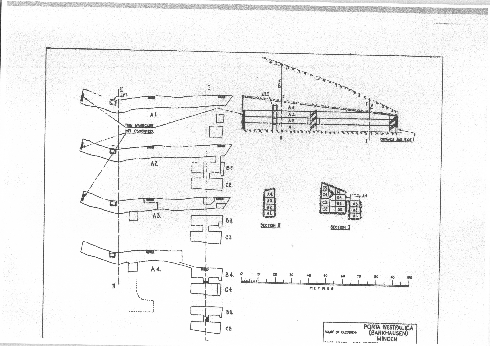

Chapter Three: Barkhausen and Bauarbeit
This chapter will look at the men’s concentration camp in Barkhausen and the inmates who supplied the labor for the Porta Westfalica projects. SS and prisoner leadership in the camp is described, noting the turbulent relationship that existed between the prisoners and their direct overseers, who were chosen from the rank of prisoners. Focus is given to some of the worst Kapos encountered by the prisoners, a description of life in the Hotel Kaiserhof ballroom where the beds were located, roll call was taken, and the infirmary was temporarily located. Descriptions then turn to the lack of hygiene and the daily routine, the lack of food, the exhausting work, and the many violent acts that occurred, an analysis of the deaths at Barkhausen taken from two official lists of the dead, and a discussion on how prisoners were able to cope with inhumane conditions. A very brief account of the prisoners’ post-war experiences is given to conclude the chapter.
One of the main reasons anything about prison life is known today about the camps in Porta Westfalica is because of the writings and actions of former prisoners. The most prolific writers are prisoners from France and Denmark. Memoirs and post-war trips to their former prisons kept some information within public reach. The sources for this chapter come from interviews, memoirs and questionnaires of one French, two Ukrainian, and thirteen Danish men.
The two camps in Porta Westfalica, the men’s camp in the ballroom of the Hotel Kaiserhof in Barkhausen and the women’s camp in a field on the outskirts of Hausberge, were satellite camps of the Neuengamme Concentration Camp. Heinrich Himmler and Gauleiter Karl Kaufmann from Hamburg created the Neuengamme camp, just south and east of Hamburg, in December 1938, as an outsourcing camp of Sachsenhausen to accommodate the expected increase in prisoners from the expected war. The camp was given independent status as a grade two camp, a labor camp with hard labor and poor living conditions, in June 1940. Nearly 106,000 men women and children were interned in Neuengamme from 1938 to 1945; only 13,000 were Jews. Table 3-1 provides a list of the number of prisoners from six nationalities. Over 55,000 died in Neuengamme1, a total of 51% over eight years. At Barkhausen, the death toll was over 44% in just six months.2
Many sub-camps, or satellite camps, were created throughout 1942 as the need for labor increased. By 1944, Neuengamme had over 60 satellite camps, springing up wherever an industry had enough demand for labor.3 Two of these labor camps were located in Barkhausen and Hausberge, two towns surrounding the Jakobsberg and Wittekindsberg hills. A second men's camp was located across the Weser from Minden at Lerbeck. This chapter gives an account of just the male prisoners from the camp located in the ballroom of the Hotel Kaiserhof in Barkhausen. The following chapter will detail the accounts of female prisoners at the Hausberge camp.
Neuengamme Prisoners by Nationality
| Nation | Number of Prisoners |
| Denmark | 4,800 |
| France | 11,500 |
| Germany | 9,200 |
| Norway | 2,200 |
| Poland | 16,900 |
| Soviet Union | 34,350 |
[Table 3.1. Number of prisoners at Neuengamme by nationality. Source: Kieler, Jørgen. Resistance Fighter: A Personal History of the Danish Resistance Movement, 1940-1945. Jerusalem, Israel; Lynbrook, NY: Gefen Publishing House, 2007, 253.]
SS Leadership
Commandant over all the Porta Westfalica camps, including Lerbeck, Barkhausen, and Hausberge, was SS-Oberstumbannführer Herman Wicklein. Head of day-to-day command at Barkhausen was SS-Rottenführer Hermann Nau4. Diplom-Ingenieur Anton Pittracher was in charge of the construction work and the use of laborers.5 Rudolf Stubber, SS-Obersturmführer, was chief of the works, a man named Diehl, the head of Gestapo of Bielefeld, carried out interrogations in the camp, and a man named Elsen or Olsen, a Gestapo agent from Bielefeld tortured the prisoners during interrogations. The camp doctor was a man named Pieber, and was responsible for a number of prisoner hangings.6 The name of at least one SS guard is known, Walter Kuert, who was arrested in Cologne on November 9, 1945. Offices and boarding for the SS officers was across the Weser River from the labor camp, in an appropriated hotel, the Großer Kurfurst,7 within view of the Dachs I entrance. Guards were a mix of SS men and Luftwaffe soldiers. Since the factories produced directly for the Luftwaffe, they were required to provide a certain number of soldiers to act as guards in the camp and worksites. The prisoner organization will be discussed later.
For the most part, prisoners had little contact with the SS leadership. Jørgen Kieler recalled on one occasion that the SS doctor spoke to him civilly, even using the formal “Sie” when speaking to him.8 Carl Wilhelm Taxbro, a thirty-four-year old Danish resistance fighter, noticed that when prisoners did come in contact with the SS because of jobs, they realized that for the most part SS were there unwillingly. He noted that the relationship with the SS was pretty good for some prisoners, but for most it was dismal.9
Aage Holger Christensen, a twenty-six-year old Danish resistance fighter, on the other hand, saw how SS officer Nau beat the prisoners many times. He would hit prisoners with his fist whenever he could, usually during roll call. Christensen was unsure if Nau ordered the many punishments that prisoners received, but he was sure that Nau enforced them. Christensen recalled one incident where he saw Nau beat a Polish or Russian prisoner who was caught trying to escape. As the prisoner was brought back into camp, Nau went right to him and started beating and continued until he could not anymore. The same prisoner was sentenced to a punishment, which was carried out during roll call. To further punish the prisoner, the whole next night he was chained with an iron ring around his neck to a post at such a height so that he could neither stand up nor sit down. The punishment was so repugnant and cruel that it is unimaginable that he survived the night.10
[Figure 3.1. Hotel Großer Kurfürst was the headquarters for the local SS. Source: “Ansichtskarte / Postkarte Porta Westfalica, Arminsberg, Hotel Großer Kurfürst | Akpool.de.” Accessed September 11, 2015. http://www.akpool.de/ansichtskarten/184246-ansichtskarte-postkarte-porta-westfalica-arminsberg-hotel-grosser-kurfuerst.]

[Table 3.2. Hierarchy of prisoners and SS at KZ Porta Westfalica. Based on a chart by Rainer Fröbe, 1984.11]
Hotel Kaiserhof
Work on the camp in Barkhausen began as early as March 19, 1944, when two hundred-fifty prisoners from Buchenwald, mainly prisoners who came from the Soviet Union and Poland, were brought in to convert the Hotel Kaiserhof in Barkhausen into a concentration camp.12 Plans were to have fifteen hundred prisoners assist professional German miners from the Saar who were to be brought in for the purpose of creating the underground factory space in the Wittekindsberg and Jakobsberg hills. By the end of the war, 1300 to 1500 men were interned at the Hotel Kaiserhof camp. The official count from the Neuengamme Concentration Camp Memorial Archive lists the number of prisoners at Barkhausen as 1300. Other sources, mainly interviews and memoirs of former prisoners put the total closer to 1500. This research uses the count from the Neuengamme Concentration Camp Memorial Archive as the official number of prisoners. The restaurant in the front of the Hotel Kaiserhof still served the local population meals throughout the time it served as a living hell for thousands of men.13

[Figure 3.2. Hotel Kaiserhof in 2009. Source: TUBS. Deutsch: Hotel Kaiserhof in Porta Westfalica, Kreis Minden-Lübbecke, Nordrhein-Westfalen, November 20, 2009. Own work This photograph was taken with a Canon Digital IXUS 500. https://commons.wikimedia.org/wiki/File:Porta_Westfalica,_2009-Nov_059.jpg.]

[Figure 3.3. Hotel Kaiserhof from the rear, ca. 1945. Source: KZ-Gedenkstätte Neuengamme. Fotografi Af Hotel Kaiserhofs Bagside., n.d. Pictures II 67b 1945 Befreiung. KZ-Gedenkstätte Neuengamme (Hamburg).]
Ballroom at Hotel Kaiserhof
During March 1994, the two hundred-fifty inmates from Buchenwald converted the ballroom of the Hotel Kaiserhof into a labor camp. They built three- and four-story bunks, desks, benches, and added barbed wire to the windows. Prisoners were lodged in a long ballroom attached to the main hotel by way of a long hall. The three buildings formed a small courtyard that was surrounded by barbed wire three meters high, with two machine gun towers on the outside and patrolled by guards and dogs. The yard was small and unpaved so that when all 1300 prisoners were outside, they were "packed like herring in a can" and stood in several inches of mud that soaked through clothing.14 Latrines enough for twenty-six people were located at the opposite end of yard and were in constant use.15
The hall measured eighty-five yards by thirty yards, the windows were blacked out, and there was no heating. Bunks were kept mostly on one side. The middle of the hall was used for roll call, meals, distribution of clothes, and other group activities. In the middle, hung over the rafters, was a noose where escapees or other rule breakers were hanged. Kapos used a stage near one end of the ballroom, which they had partitioned off with curtained dividers for their personal living quarters.16
Sleeping conditions were sickening. Bunks were four levels high, two feet wide and six feet long, and spaced one foot apart.17 About 700 bends were available, but only 500 had straw or cotton mattress, which meant some prisoners slept on bare bed boards. Bedding consisted of dirty, thin blankets that were never washed and straw mattresses that were also never cleaned. Each bed had a dirty woolen blanket, many had two, some had one, and some had none, but every night one used a different blanket.18 Prisoners were supposed to sleep in only their underpants and under shirt, but many wore their sweaters, stockings, or even all of their clothes to bed. When not worn, clothing was often used as a pillow or otherwise kept close to the body because coats, hats and gloves would often disappear during the night if not carefully hidden or protected.19
There were never enough beds for then number of men in the camp. Kaj Bjørn Karbo, a twenty-four-year old Danish resistance fighter, recalled that by October 1944 the number of Danish had increased to 200, and there were already 800 Russians, and 500 others from different nationalities. About half of the prisoners needed the beds since they worked in two shifts, so there was always a race to get bedding. This also meant there were usually two to three men sleeping per bed. Since the Danes worked mostly in the mine, they were last to camp and often had to sleep in their clothes on the bare boards of the bed. One could not be too picky when selecting a mattress or blanket, Karbo recalled, because they were usually soaked in urine or covered in feces and always full of lice. Lice drove Karbo crazy the first few days, but then he grew used to them so that he hardly itched.20
Lice were not the only pest to infect the beds. When Danish prisoners in Vincent Lind’s group were brought to Porta Westfalica they were taken to the ballroom, given some coffee, bread and marmalade. Sitting on the four level beds they discovered the beds were covered in fleas. "Fleas! A swarm of fleas. The fleas had favorites, right?” recalled Lind. “And I was a favorite of the fleas. It was terrible! I was always full of it! And I killed hordes, but there were a million of them. And they do a lot of harm! And they itch! And you can get infected.”21
When on the day shift, prisoners usually got six or seven hours of sleep between 10pm and 4:30am. Sleep was always broken by needing to use the toilet anywhere from three to ten times a night, roll call, and several times a week by unannounced inspections looking for contraband clothes, cement bags or blanket pieces which were used to pad clothing for extra warmth, extra blankets, food, knives and bowls.22 Axel Hansen recalled that they slept with only a very threadbare blanket, on thin straw mattresses, and slept in their shirts, using their clothes for a pillow. The air in the building was cold because there was no heat. “It was hell,” Hansen declared.23
There was a bathroom in the yard for use during the day, but at night they were not allowed to go in the yard, so there was initially a bathroom in the building.24 Their food was often rotten, so inmates quickly developed dysentery and other illnesses that often left inmates too sick to leave their beds to relieve themselves. Toilets, but no toilet paper, showers and workshops were originally located in the hall, but moved to outside locations in December 1944 due to insufficient room inside as the number of prisoners swelled at the end of the year. A new building was later added that had 15 showers and 26 water faucets, but this was still not enough for the number of prisoners living there. Until then, the courtyard was equipped with a two-meter high pipe with holes, out of which water would stream, thus functioning as a sort of shower for the 1300 men.25

[Figure 3.4. Diagram of Hotel Kaiserhof ballroom as it was used for a concentration camp. Location and number of beds, tables and rooms are not to scale, nor exact. Precise details on location and number of furniture items are unavailable. Drawn by author from description given by Jørgen Kieler in Resistance Fighter: A Personal History of the Danish Resistance Movement, 1940-1945. Jerusalem, Israel; Lynbrook, NY: Gefen Publishing House, 2007, 262.]

[Figure 3.5. The inside of the Hotel Kaiserhof hall or ballroom, facing the stage where the Kapos slept. Source: KZ-Gedenkstätte Neuengamme. Hall in Kaiserhof Hotel, n.d. Pictures II 67b 1945 Befreiung. KZ-Gedenkstätte Neuengamme (Hamburg).]
The Prison Infirmary
The infirmary was initially located in the ballroom off to the side of the stage, separated from the rest of the room by a screen. Medication was basic and nutrition for those in the infirmary was no better than that given to the other inmates. The irony of a health clinic in a labor camp designed to work people to death was not lost on the prisoners who went there as a last resort.
Even the sick in the infirmary were required to use the latrine in the yard, unless they were physically unable to, in which case there was a metal bucket with sharp edges. A separate building was constructed in December, but there was no glass in the windows for a time, and no waiting room, so the sick waited outside in the cold and elements for some time before entering the building. All of these factors meant only the really sick ventured to the clinic.26
By the end of November, the number of Danish deaths was troublesome for the Danes and also the SS. Jørgen Kieler, a Danish medical student and resistance fighter, was reassigned to the clinic to stem the tide of dying Danes. A Czech dentist was in charge of the infirmary, a Georgian pharmacist and an actual doctor from Poland were next in rank, followed by a French medical student and Jørgen Kieler. According to Karbo, the medical students were the best at providing care. Kieler brought organization, cleanliness, and health to the clinic. He saw that the beds were organized by sickness, bedding sanitized, and the floor cleaned. Shortly thereafter he was transferred to work in the mine. "A doctor who makes people well could not very well be tolerated in an extermination camp,” commented Karbo in his memoir.27
Prisoners
Prisoners consisted of prisoners of war, political enemies, resistance fighters, criminals and the asocial; nationalities included German, Danish, Russian, French, Polish, Czech and Hungarian. While Soviet and Polish prisoners outnumbered the other ethnic and national groups by far, most of the prisoner accounts available for this research are from Danish prisoners, about 13% of the total number of prisoners. Soviet inmates were predominantly prisoners of war. French, Czech, and Hungarian inmates were mostly political prisoners. Danish prisoners were almost all political prisoners who had been captured in Denmark as part of the active resistance against the Third Reich. Some were homosexuals or unfortunate men who were caught in the right place at the wrong time and taken prisoner by Nazis in Denmark.
Danish Prisoners
Before 1943 the Danish government insisted on, and were allowed to keep, political, asocial and other Danish prisoners of the Nazis in prisons within Danish boarders because Danish leaders wanted to keep their citizens out of Germany. As resistance movements increased, though, Nazi leaders began to break their agreement with Denmark and began to move some prisoners to German camps, where the Nazis could then do anything they wanted with the prisoners. Life in the Danish prisons was not easy, as there were interrogations and torture, but prisoners were generally given clean bedding, toilets, and sufficient food.28
The first large deportation of Danish prisoners was in the fall of 1943. Danish political prisoners, usually communists, were taken to Stutthof near Danzig. Resistance fighters, Danish and Norwegian, were taken to Sachsenhausen. After this, the Danish insisted on keeping Danish prisoners in Denmark, and built a special prison for Nazi use in Frøslev. It was opened on August 13, 1944, but only in use for a few weeks before the Germans again broke agreements and deported 200 prisoners to Germany.29 These 200 prisoners were transported from the prison to the train station by truck, so that their departure was unobserved by the public. They were then transported to the Neuengamme Concentration Camp near Hamburg by train. En route to Neuengamme, they survived an Allied bombing raid on Hamburg where prisoners heard debris hitting their train cars. Once they arrived in Neungamme they were stripped of clothes and any personal items, including wedding rings.30 Their heads and pubic hair were shorn with blunt clippers, officially to delouse the prisoners, but the intended purpose was to further dehumanize, disparage, discourage, and demotivate. New prisoners were given ill-fitting and dirty prison garb, and a number beginning with 50 (50123, 50245, etc.). Neuengamme was a terrible prison with diseased and dying men and women crammed into barracks.
While in Neuengamme news of work camps circulated, and many Danish prisoners, who were relatively healthy compared to other prisoners who had been in camps much longer, decided to join the work groups in hopes of a better situation. They thought the Nazis meant for them to work, and would therefore treat the prisoners better. Little did they know, “Vernichtung durch Arbeit” (death by work) was one of the main purposes of labor the camps. On September 18, 1944, nearly 200 prisoners, including 98 Danish prisoners who had come from Frøslev, left for the work camp at Barkhausen. Prisoners were packed into four cattle cars, fifty men to a wagon, twenty-five on each side, with the doors locked, and they were given only an old jam bucket for toilet for the entire trip. Prisoners had to sit on the floor with legs apart, and another person sitting between his legs, keeping that position for the 42-hour trip to Porta Westfalica. Two SS guards with submachine guns and whips kept watch inside the car at all times. After arriving at the train station in Porta Westfalica, they crossed a footbridge over the Weser River and arrived at a beautiful timber framed hotel, Hotel Kaiserhof. Some thought they had perhaps made a wise choice if they were to be lodged in a posh hotel. Rather than enter the front door, they were marched around to the back of the hotel, to a run down ballroom. Survivor Jørgen Kieler remembered seeing the Latin words "HIC MORTUI VIVUNT" written in coal on the whitewashed wall as they entered their new prison.31
Prisoners arrived at various times between March and December 1944. Kaj Bjørn Karbo came to Porta Westfalica on September 21, 1944, with a group of 99 Danish prisoners. They spent only two days and nights in Neuengamme, and then two more days and nights by train in a French cattle car on the way to Porta Westfalica. Karbo remembers the SS soldiers as "large nosed" men who would beat the prisoners if they moved, and would openly enjoy the looks of hunger on the prisoner's faces as they smoked cigarettes.32
When Jørgen Diemer, another Danish resistance fighter arrived, most likely at the same time as Kaj Karbo, there were already 1300 men in the camp by his estimate. Diemer arrived by train on Tuesday night. They were required to stay in the train car until Wednesday morning, even though they had already traveled two days and nights, sitting on the floor.33 Axel Christian Hansen, another Danish resistance fighter, arrived with a later group on October 3, 1944.34
Other Nationalities
Known records from Soviet prisoners are very few. This section of the research has only two reports from Ukrainian prisoners, and their descriptions of prison life and work are rather sparse. Dimitrij Iwanowitsch Zwagorskij, from the Ukraine, came to Porta Westfalica in a first wave of inmates from the Neuengamme camp, but did not remember the date.35 One memoir from a French prisoner, Pierre Bleton, is used in the research. Reports from survivors of other nationalities were unknown at the time of this research. As such, experiences from Soviet and Polish prisoners, the large majority of prisoners in the camp, are left untold.
Inter-Prisoner Relationships
The camp at Barkhausen was an international community. According to Vincent Lind, a nineteen-year-old Danish resistance fighter, the Danish worked well with the Russians, but it was harder for them to work with the Polish. A Georgian named Gregor was a pharmacist before the war, and while in Barkhausen he was in charge of the infirmary. One could always go to him for something to help with the fleabites, remembered Lind. There was also a German who was sent to the Front in December 1944. Gregor had told Lind that there were many Russians in the beginning, but when Lind arrived there were only 2% of the Russians remaining. As the Germans withdrew from Ukraine the collaborators and young "half-criminals" (halbkriminelle), some of them 12 to 16 years old, came with them to Germany looking for work but were caught for criminal actions and sent to Porta Westfalica. Only 2% of them survived.36
Although there was a feeling of solidarity for some Danish prisoners that spanned political differences and created friendships that lasted after the war, some discrimination existed between the different nationalities, and there was even discrimination among the "antisocial" and "political" Danish prisoners.37 Antisocial prisoners were those who were picked up in Denmark, mainly as a result of German leaders fearing the Danish were collaborating with the Allies to allow them to invade Germany through Jutland. Antisocial prisoners were usually criminals, unemployed, homosexual, or people in the right place at the wrong time. They were distrusted and despised by the political prisoners, who were for the most part resistance fighters. The resistance fighters felt the antisocial prisoners were in prison without cause, they had not fought for their "right" to be in prison. This derision also lasted after the war, as groups that sought to remember and commemorate the past excluded the asocial prisoners; even calling their group "the 50 from Porta" referencing the numbering system which began with 50 while the asocial prisoners were numbered beginning with 54.38
Historian Jens-Christian Hansen notes that there were no illegal organizations among the prisoners as there were in other concentration camps. Prisoners were too exhausted from hard labor, 12-hour shifts every day, and too weak from malnourishment to orchestrate any sort of organized resistance or collaboration. All news from the outside was through rumors from those who worked with civilians.39
Aage Holger Christensen, a twenty-six-year old Danish resistance fighter noted that prisoners followed the course of the war by organizing German newspapers, and following the war on a map that belonged to a Russian bed mate. Otherwise rumors came from radio broadcasts, although Christensen noted that he never had direct access to radio broadcasts.40
Prisoners of other nationalities often felt that Danish prisoners were given preferential treatment because they were allowed to write and receive letters Red Cross packages due to their Aryan status. This caused contention among other prisoners often leading to food, clothing, and other personal items getting stolen from the Danish prisoners.41
One day as Vincent Lind was in the infirmary with three other Danes, a nurse brought them a cup of milk. It was sour milk, but milk was something so seldom seen that they did not care if it was sour. As the nurse brought over the cup to the four sick men, all lying close together, he said, "For the four Danes," and handed the cup to one inmate. Instead of passing the cup around, the first inmate drank the whole cup himself. Lind was paralyzed with astonishment. He and the man who drank the cup of milk were the only two of the four that survived. They met together every year after the war but neither of them ever spoke of that event.42
Danish survivors often spoke fondly of Russian prisoners, though. For example, Vincent Lind remarked that the Russians could sing beautifully, and they sang often. On Christmas Eve, they sang religious songs as well as a professional choir.43 Not all remembrances were good. One time, a Russian stole something from Lind. He followed and began a fight with the man, but was soon surrounded by twenty Russians. He left his things with the Russians.44
Prisoner Hierarchy
The camp at Barkhausen consisted of 1300 men from 17 different nationalities. Differences in language and culture, coupled with the harsh and stressful conditions led to contentions among the prisoners. Only 159 SS and Luftwaffe guards managed the prisoners in camp and at the work site.45 Organization among the prisoners within the concentration camp was built on three levels of overseers, staffed by prisoners chosen by the SS. Regular prisoners had no rights and were at the mercy of any and all prison overseers. One level up from a common prisoner was a Schieber, or pusher, who would ensure that prisoners worked by beating them with rubber truncheons, sticks or anything readily at hand. Overseeing the pushers were a series of Vorarbeiter, or foremen, who were in charge of small work groups, and were sometimes able to pick the prisoners in their group. All prisoners were overseen by a band of Kapos (Kameradschafts-Polizei),46 who were chosen by the SS from amongst the prisoners and were usually German criminals from other concentration camps. They were expected to mistreat their fellow prisoners just as the SS did, and were demoted if they did not. Once demoted, they would not last long back in the ranks of their fellow prisoners.47 Kapos were also given more meat with their food, and some alcohol. Some of them gave the SS officers sexual favors, as well as taking partners from the pool of fellow prisoners. Kapos were usually German, Russian, Polish, Czech, and a few Danes.48 Kapos had absolute power over their fellow prisoners, and were merciless in punishing prisoners who they felt had violated the rules of the camp. Kapos wore a green triangle and were usually criminal inmates, while political inmates wore a red triangle.49 These three levels of oversight meant that the prisoners managed themselves, leaving the SS and Luftwaffe guards with relatively little to do.50 The system and positions in the prisoner hierarchy were a copy of the Neuengamme (and other concentration camp) systems for prisoners to self regulate.51
Comparison of Prisoner Hierarchy
| Neuengamme | Porta Westfalica |
| Lagerältester (camp elder) | Kapo |
| Blockältester (barrack elder) | Vorarbeiter (foreman) |
| Stubendienst (barrack room duty) | Schieber (pusher) |
[Table 3-3. Table comparing the prisoner hierarchy between Neuengamme and Porta Westfalica.]
Many Kapos, Vorarbeiters and Schiebers were decent people who had been destroyed by the system. "We were always threatened by the Kapos, who had the task, so to speak of, exert a certain type of terror,” survivor Vincent Lind recalled. “They could be so arrogantly friendly. But basically there was always the threat of a beating; which happened again and again.” Germans were the most common nationality of the Kapos, although Lind remembers a Czech and a Russian.52
Survivor Jørgen Diemer saw only Kapos and fellow prisoners give punishments, usually the German Kapos. The SS men would only smack prisoners. Almost all German prisoners in Barkhausen were criminals or gangsters. The Kapos were violent criminals and pimps, and even a robber and murderer. In Diemer’s view, they were all mentally ill.53
George Knögle (Schorsch)
The camp elder (Lagerältester), or head Kapo, at Barkhausen was a red haired, ill-tempered, brutal man with the nickname Schorsch; his real name was Georg Knögl, or Georg Gnoggel. He was an excessive alcoholic, a former pub owner from Nuremberg, a criminal, and a sadist.54 He would often trade food to get alcohol, and was unpredictable and brutal. "He was the master of life and death in the camp."55 Schorsch was about 50 years old, about 5 1/2 feet tall, slightly humped-back, with straw red hair, no teeth and a strongly curved nose. Everyone believed him to be mentally ill.56 He had been in prison camps for at least eleven to twelve years.57 Many prisoners believed him to have a hand in any maltreatment that happened in the camp.58 Schorsch could not walk past “prisoners without hitting, threatening or swearing at them.”59 He was almost always drunk because his position allowed him access to alcohol. Some Sunday afternoons when he was not drunk he would play his accordion.60
Karbo recalled an incident with Georg Knögl, who he described as an “insane redheaded sadist.”61 Schorsch would often go into a rage over anything. During this one instance when coming from the latrine in the middle of the night, Karbo witnessed a Russian prisoner running towards him followed by Schorsch who caught up to him and beat him with a board from a bed over the head so that the prisoner fell down. Schorsch immediately started beating him on the head with a rubber truncheon until his face was unrecognizable. After he tired of beating the prisoner, Schorsch drug him to an iron ring in a corner of the hall stuck the head of the Russian into the ring, and then continued to beat him all over for fifteen minutes, then went to drink from his stash of alcohol. While Schorsch was gone another Kapo freed the prisoner before Schorsch came back. This he did, wrote Karbo, not for humane reasons, because he was also sadistic, but because he had a homosexual relationship with him. Karbo mentioned that homosexuality thrived in camp. The Russian was by this point unconscious. Karbo was uncertain as to the fate of the Russian, but it seemed impossible that he could have survived.62
Karbo also recalled that he was beaten by Schorsch on the last day before they left the camp. They had received Red Cross packets that day, and most of the contents had been taken by the SS men. Karbo complained to the Lagerältesten about the amount of items that had been taken from their packets. He did not think anything would happen since they were so close to leaving. Schorsch became very upset and said it was the SS men, not him, who took all of the contents of the packages. He punched Karbo several times in the face and where ever else he could, then smashed a packet of crackers over his head to underscore that it was not him who stole the contents. He then took two bars of soap from the package and walked away from Karbo.63
Christensen recalled that a Russian prisoner was accused of stealing bread. It was not absolutely clear if he had done it or not, but he was brought to Schorsch who beat and kicked the prisoner so much that it was a horror to watch. But that was not enough for Schorsch. He continued the beating with a rubber truncheon, and then he used a board from a bed. The prisoner had to be carried out after the beating, and it was unknown what happened to him.64
Georg also stole from their packages. After the SS took any “forbidden” items, Georg took whatever he wanted. He was the evil spirit of the camp, and everyone was afraid of him, because he would just start beating any prisoner who came by.65
Charlie Jörgen August Rasmussen, a forty-four-year old Danish resistance fighter, recalled that the worst violence he witnessed was done to a Polish prisoner who was suspected of stealing potatoes. His hands were tied behind his back and he was set upon a chair which was set upon a table. Then a rope was tied to his bound hands and looped over a hook on a pillar. Schorsch then kicked the chair from under the prisoner so that he was hanging by his arms which were bent backwards and upwards. The prisoner lost consciousness, so Schorsch threw a cup of cold water on him. When he came too, the whole process began again. This continued until the prisoner confessed to stealing the potatoes.66
Rasmussen also witnessed Schorsch strike down a Russian prisoner with a stool. The prisoner was soon physically healed, but he was mentally ill the rest of the time he was in the camp.67 Arne Zachariassen, a thirty-nine-year old Danish resistance fighter, observed that Schorsch many times would beat prisoners to the ground with a stool or other object, until he was certain the prisoner would only live a few more hours.68
Erik Sundö, a twenty-five-year old Danish resistance fighter, recalled a February 1945 incident where he saw a Russian or Pole steal a knife from a fellow prisoner. This was told to the camp elder who, with another Kapo beat him by kicking him as he lay in the snow until he bled. Schorsch ordered that he be left there to lie in the snow. A couple of nurses attended to him anyway, but it was uncertain to Sundö what happened to him.69 Sundö remembered another incident where a Russian stole something, and Schorsch beat him with an iron bar with a hook on the end which went deep into his head so that blood and brain matter came out.70
Sundö also recalled the incident that lead to the death of fellow Danish prisoner, Poul Gerner Mikkelsen. While Mikkelsen was sick with dysentery he urinated in the blanket while in his bunk. A Russian told Schorsch, who then proceeded to box his ears. The next day when Mikkelsen needed to relieve himself, he could not make it out of the fourth level bunk he was in, so he peed in a bowl. A Russian told on him and he was sentenced to a beating. A few Danes decided to intervene and asked that a Dane be able to administer the punishment, in hopes of lessening the punishment. A Danish spokesman named Schlosser was called to administer the beating which he did with a board from a bed, giving Mikkelsen fifteen beatings on the back. Schorsch was not satisfied and ordered Mikkelsen to spend the night in the morgue where it was forty-one degrees Fahrenheit. Then he was locked in the toilet for three days without blanket or mattress or anything else. He went to the sick bay after being let out, but died shortly thereafter.71
Sundö himself was beaten by Schorsch. The accusation was that Sundö had traded something from his Red Cross package for a piece of meat which was forbidden. Sundö was scolded by Nau and then let go. Schorsch was not satisfied and laid Sundö over a bench and beat him with a truncheon twenty-five or twenty-six times. Sundö never made a noise which made Schorsch angry. When Schorsch had finished, Sundö turned his back on him to leave, and was hit over the head with a stick.72
Jørgen Kieler saw Kapo Schorsch beat a starving German prisoner who could not hold in feces or urine to death. Schorsch beat him with a board from a bunk bed until his bones were visible. The prisoner died shortly after he was brought to infirmary73
Kapo Otto
Similar stories of violence and inhumanity were told about a Kapo named Otto. Otto was first Kapo, just lower in rank than Schorsch, thirty to thirty-five-years old, about six feet tall, relatively thin, with extraordinarily long arms, a slightly hunched back, and rounded shoulders. It was said that he was a communist, but he later became an SS-man. The rumor in the camp was that he had a high rank in the SS. He left the camp around Christmas 1944. Most noticeable by all survivors, was that he was a very good boxer.74
Karbo wrote that while he was working to build supports in a mine, there was a cave in and they were stuck in the mine for a long time. It was forbidden to relieve oneself in a mine, but a Danish man, Customs Official W. from South Jutland, was suffering from dysentery and could not hold it that long. After he relieved himself, a Russian prisoner told Otto, who came right away. A kind Polish foreman suggested that he knock W. down and that he stay down when Otto came, to convince him that this was enough punishment. They did this, but it was not satisfactory for Otto who pulled W. up from the ground and punched him until he fell again. This he did eight times. After this W. was very sick and died. Karbo was certain that the beating from Otto lead to the prisoner’s death.75
Christensen described Otto as an Arbeitskommando in the ”Weserstollen", and not as bad as Schorsch, but similar in many ways. He was a very good boxer and took it out on prisoners to keep in shape. Christensen recalled one event where a German prisoner was accused of stealing an apple. Otto beat him until his face was unrecognizable.76 Rasmussen noted that Kapo Otto was another sadist. He was German and a homosexual, and he abused prisoners most horribly. Rasumussen saw him beat prisoners many times.77
Zachariassen wrote of another Kapo named Otto, possibly the same, as that mentioned before, but this Otto is reported to be Danish, instead of German. Also possibly marking this as a different Kapo, Zachariassen does not mention this Otto as a boxer. Zachariassen writes that this Kapo Otto was a Danish prisoner who came in the middle of September. In the beginning he was pretty easy on his fellow Danish prisoners, but that soon changed to the opposite. He had openly sexual relations with young Russian prisoners. If one was not friendly with these prisoners, then it would go badly for them. Many times Kapo Otto was able to take 90% of the contents of the Red Cross packages. He was released around Christmas time 1944 and sent to the front line as a German soldier. Zachariassen was there when one time, during the nightshift at Weserstollen, Otto came back to the worksite after a sexual interaction with a Russian prisoner, and in a bad mood, began to beat the prisoners in the direct vicinity with a stick. One of the prisoners was the Police chief Aage Agersted from Aabenraa.78
Kapo Hans
Rasmussen noted that another Kapo, named Hans, abused prisoners daily. He recalled a time when they were standing in line waiting for food to be handed out. They were all very hungry, and those behind were pushing in order to get in front as soon as possible. During this pushing Rasmussen was pushed out of line, and Hans, who was standing next to them to keep order, quickly shot over to Rasmussen and punched him with a balled up fist multiple times in the face, knocking out his top front teeth.79
Kapos Fritz and Paul
Zachariassen offered details on the greatest number of violent Kapos and SS leaders. Zachariassen wrote of Kapo Fritz, that he was a leader of the shoe repair group. A cynical and brutal man, who would take contents of Red Cross packages, and when confronted would claim the rats ate it. If a prisoner protested more, he would beat the prisoner. It became known that through contacts outside of camp, Fritz received payment in kind for repairing shoes for various subordinate SS men, which was forbidden. Afterwards he was demoted to a foreman on the night shift in Kippstollen.80 Of a Kapo Paul, Zachariassen wrote that he was most known for his intimate relationship with the room attendant (Stubendienst) Ossie. In one brutal punishment, Kapo Paul gave five strokes on a prisoners back until he went unconscious.81
Hermann Nau
Zachariassen recalled that Hermann Nau, the SS officer in charge of camp, hit him. “Once I was working with a jack hammer, which I had never done before,” wrote Zachariassen.82
I admit I was not in a hurry to do anything, when suddenly Nau stood by my side, punched me a few times in the face with his fists, and then beat me with his whip that he always carried with him. I was shocked because I did not see him coming. After he hit me he grabbed me by the collar because I still was not working fast enough. Since that didn't work he kicked me in the groin. I don't know why he then stopped, but I'm certain he gained some satisfaction from abusing me, because he suddenly stopped and walked away smiling. (Zachariassen, Arne. “Auszug aus dem Fragebogen und Persönlicher Bericht von Arne Zachariassen,” 2.)
Zachariassen was also there when Nau beat two Frenchmen, one was the director of Citroen-Works, and the other was a director of a big cement company in France. It happened at a worksite where Zachariassen was helping them with brick laying. Nau came by and was not happy with their work so he began to beat them with a whip that he had with him. He beat them until they fell on the ground, and since he could not stand to see prisoners lying around, he kicked them in the side. As they tried to rise, Nau kicked them in the groin. Then he continued kicking them until he was satisfied, and left the work site smiling. Zachariassen also observed Nau take cans and other goods that came from Red Cross packages. He would take as much as he could carry, and take them to his lover in the area.83
Kapo Josef
Christensen wrote about an Austrian prisoner named Josef, who was forty or fifty years old, 5 1/2 feet tall, had an ape-face, sloped shoulders and very long arms, a hunchback, and he “looked like a freak.”84 Not only did he hit prisoners all the time, but he would have berserk like seizures. He would beat with anything he could get his hands on; iron bars, shovels, spades, etc. He did not beat everyone, but picked out a victim that he beat every time he flew into a fit of rage. Christensen was unfortunately one of those victims. On the first day in the work command, Christensen mentioned to a comrade that they were in the worst command because they had to work out in the open. This was overheard and he received his first beating. Christensen noted that it would not be an exaggeration to say he got a beating every day. Christensen gave no reason to be beaten, but was beat without reason. Josef would beat so many people and send them to the infirmary, that he received beatings from the SS because he beat too many prisoners near to death.85 Christensen heard about an incident the day after his first punishment. The SS had just forbidden Josef to beat anybody, at least as hard as he had in the past. As they were coming back from the worksite that day, Josef began to have a fit, but he just stood in the path with hands in his pockets, his face turning ever redder. Finally, he exploded, grabbed a shovel and ran into the nearby forest where he beat a tree until he was calm again.86
Kindly Kapos
Not all in the prison hierarchy were vicious and evil. Karbo himself was selected as a Schieber in January 1945, the lowest rung of prison hierarchy. He was in charge of a 16 man work gang that helped German civilian workers build the factory in Jakobsberg.87 Other positive interactions with prison hierarchy included another Kapo named Fritz. Zachariassen wrote that Kapo Fritz was a German political prisoner because of his communist beliefs. Zachariassen worked as a translator in the camp and was often with Fritz when he went to deliver punishments. Many times it was certain that a prisoner had committed a crime, such as stealing food from another prisoner, but instead of punishing the man himself, Fritz would let the leader of the prisoner’s nationality have responsibility for inflicting punishment. Such punishment was usually less severe because prisoners tended to look after those of the same nationality. For Zachariassen, Fritz was an example of someone who did not lose their respect for an individuals rights and humanity, despite his own loss of freedom.88 The next highest up in Karbo’s prisoner hierarchy was a Kapo named Ernst, and Karbo wrote that only good can be said of him. “He helped us where ever he could and he used us a lot.”89
Another humane individual was the camp clerk, Mr. Magnussen. Zachariassen described Mr. Magnussen with high praise.
As soon as the Danish deportees arrived at the Porta satellite camp, we were introduced to the camp clerk, Mr. Magnussen from Flensburg, and had some knowledge of the Danish language. In the six months of our stay in Porta, Mr. Magnussen was a good and helpful friend to many prisoners, not the least of which the Danes, and it was with great concern when all of the Danes left as part of Graf Bernadottes operation on March 19, 1945, that we could not bring Mr. Magnussen with us, who we knew to be a man on our same wavelength.
In the hardest times for us Danes, as it seemed that every hope was out of the question, as we saw many of our compatriots cower, Magnussen had a particularly strong need to help us through the darkest points, and since Magnussen was in the camp before and after us, I don’t doubt, that he is able to provide more enlightening information. (Zachariassen, Arne. “Auszug aus dem Fragebogen und Persönlicher Bericht von Arne Zachariassen,” 5.)
Jørgen Kieler wrote fondly of fellow resistance fighter Nikolaj Nikolajsen. Kieler described several instances where Nikolajsen was always ready to help others, even prisoners of other nationalities. On one occasion, after a shift of work in Jakobsberg, a Russian prisoner was too ill to make it back to camp, so Nikolajsen carried him the whole way. Nikolaj also stopped a fight set up by Kapos. When Danish received Red Cross packages near Christmas, the Kapos distributed the packages in such a way that all other prisoners were acutely aware of the food they were about to miss out on. All of the other prisoners were ready to attack when Nikolajsen intervened and got them to pause, and encouraged the Danes to share their food.90 Unfortunately, Nikolajsen died of starvation and tuberculosis on March 3, 1945, in the infirmary, under the care of Kieler.91
Hygiene and Clothing
Prisoners usually arrived with very little. What they did possess were taken from them and replaced with a standard set of clothing. Underpants and under shirt were made of shirt material. Foot wraps were used instead of socks, as long as they held. A pair of striped pants and a jacket with numbers on the right thigh and chest, a coat in winter, canvas boots, and a striped cap were the standard issue. In severe frost they were also provided striped earmuffs and striped mittens. Everything was without lining, but in the beginning they were at least clean. Some boots came without shoelaces so steel wire or other materials were used. Leather boots were given to the prisoners first, then canvas shoes, and some prisoners received wooden shoes.92 Prisoners were allowed a change of underclothes a couple of times, but the outer clothing was never exchanged or washed.
If constant watch was not kept over any clothing item, it was usually stolen. Prisoners reported losing jackets, winter coats, caps and cigarette containers. Taxbro recalled a time when he loaned his coat to a fellow prisoner, but it was never returned, and there was no hope of obtaining a new one.93 Other personal items included soap, shreds of a scarf to put around the neck, paper yarn, paper from cement sacks to line the clothing, pipes, belts, spoons, knives, hand towels and cigarettes, which were used to trade for other necessities.94
The Red Cross sent two clothing packages to the Danish while they were interned in Barkhausen. The first package contained warm underwear. Prisoners were later required by the SS to trade the warm under shirt for a thinner blouse. Prisoners never saw the thick jacket or pants that were in the packets, but they were issued the sweater, socks, bandana, and ski cap.95
Axel Hansen described they hygienic conditions in Porta Westfalica as quite terrible. When prisoners arrived in Neuengamme their whole body was shaved with dull hand shears, and their heads were shaved. During his time in Porta Westfalica, Hansen had his head shaved with an ”Autostraße," a reverse mohawk, three times and was never able to wash his hair.96 Taxbro recalled receiving the “Autostraße” six or seven times, and also getting his whole head shaved.97 Karbo noted that Georg Knögl and other Kapos and prisoners with a position did not have their heads shaved.98 Prisoners easily remembered Knögl because he had a shock of red curly hair.
The camp in general was extremely dirty. Karbo remembers the floor being cleaned only once in six months, and only with cold water. There were only twenty-one faucets for 1300 men, and only thirty minutes allowed for washing. Showers were done with cold water and loam for soap that only lasted a week.99 Generally there was no time to wash in camp, and only sometimes did a prisoner find a place and time to wash at the worksite with water or snow.100
Only 500 bowls existed in the camp, and with 1300 men the bowls were used on average three times. No time was provided for washing the bowls, so a prisoner could easily get a bowl that had just been licked clean by a comrade with tuberculosis.101
The toilet situation was just as dismal, with toilets, floors, walls and ceilings in the lavatories covered in feces. The sick with dysentery used the same toilets as those who were not yet sick. The toilets were rough hewn wood latrines with fourteen holes cut in the wood which was positioned over a cement trench. There was no toilet paper.102 Kieler reported that diarrhea was the most common condition, due to hunger.103 The health clinic was thus always overloaded and four to five deaths a day were normal.104
Daily Routine
Karbo described that on his first day in Porta Westafalica he felt pretty good about the camp; they only had to sleep two to a bed, the food was better than in Neuengamme, they were told they would work a 12 hour day, and the camp was located only 100 kilometers from the front which brought hope of a quick end to the war and liberation. On the first night a large block of prisoners were kicked out of their beds in order to make room for the new Danish prisoners; the following month Karbo’s group were themselves relocated for a new wave of Danish prisoners. Karbo remembers his first day that the Danish were full of curiosity, and a bit of oblivious enjoyment, and they sang as they marched to work.105
Prisoners were woken up at 4:30 am, and if not out of bed by 4:45, the Kapos would rouse them out of bed with shouting and yelling and beating with the wooden slats from the bed, or banging on a piece of train track with a hammer. Diemer saw many of these slats splintered across the backs of many prisoners.106
Most of a prisoner’s time was spent standing. Even just standing around was as much work as the body could sustain after the paltry and unwholesome food they were given which often consisted of bad rye bread and beet soup. Prisoners were on their feet 15-16 hours a day on bad wooden clogs with flat soles.107 When not at work, prisoners were often standing in lines. There were always long lines to get into the hall for supper. The front of the line was a dangerous place to be as prisoners fought and struggled to be first in line. Diemer remarks that the Danes generally preferred to wait instead of fight for the front, which meant an extra 45 minutes of standing in the cold and sometimes rain, wind, and snow in thin clothes. Diemer calculates that on top of the 12-hour workday, another three or four hours were wasted standing around in lines or for roll call. This led to only a half hour for breakfast and 45 minutes for supper, and roughly six hours on average for sleep.108
Hard labor and paltry, unhealthy food took a toll on the body. Diemer weighed 187 pounds when he entered the camps and 121 pounds when he left. Not only does such drastic weight loss make one more susceptible to the cold, but it is also painful to sit or lay down when there is no fat or muscle between bone and skin.109
There was never enough blankets or mattresses. Broken beds, ripped blankets and torn mattresses were not repaired. Kapos and their special friends took any extra blankets.110 Another big problem during the night was the need to use the restroom. Most men had to go up to six times at night. This meant getting dressed, putting shoes on, and walking outside to the outhouse. Sometimes prisoners could not make it. Diemer remembers once when a prisoner was not able to even make it out of the hall before he had to go. He was beaten and then forced to lick up his own urine. It happened a few times where prisoners would urinate into their bowls. Diemer makes it clear that these were not uncivilized men acting like pigs, but rather that these men were so trodden down that they did these things because of exhaustion and physical weakness. Terrible conditions in the camp brought civilized and cultured men to act in unsanitary and uncivilized ways.111
Prisoners usually slept two to a bed and were often required to sleep without blankets as collective punishment. After Diemer was released from the infirmary, he spent the first four nights without a blanket and without a mattress because he and his bunk mate were still too weak to hunt down and “obtain” a mattress to replace the mattress stolen from them while in the infirmary.112
Often disrupting sleep were inspection raids carried out by Kapos multiple times a week. Kapos looked for verboten items like extra blankets, clothes, cement bags, knives, food, bowls.113 Christensen also wrote about nightly mishandling (Misshandlungsszenen) were some of the most macabre forms of distraction.114
Roll Call
Roll call was in the building because the courtyard was not big enough. Prisoners were lined up in five rows and counted.115 There were usually two roll calls per day, each lasting on average for an hour. Christensen recalled one roll call that lasted several hours, and Kieler notes that 2-4 hour roll calls were not that uncommon.116
Food
Food was altogether insufficient. Only 1000 calories were offered in the form of a thin slice of bread, made from potatoes and oats, and coffee substitute for breakfast, thin stew or mulligan usually consisting of cabbage and carrots for lunch, and bread with some form of cold meat (sometimes ground meat from animals that had died in Allied air raids) for dinner. Spoons, bowls, and cups were in limited supply and were therefore shared, but rarely washed.117 If you were in the clinic, this could mean that two other inmates with different diseases used the bowl and spoon before you did, thereby likely infecting you with their illness.118
Hansen only recalls receiving two daily meals that consisted of one thin piece of rye bread and potato soup for breakfast and two thin pieces of rye bread and kohlrabi soup in the evening. Food was handed out in the hall where they slept, in the middle section that was left empty. Many prisoners would beg the cook for extra bread, which was dangerous, for it could be punishable by beating if caught by the Kapos.119
The type and quantity of daily nourishment varied. In the worst period prisoners received 200 grams of daily bread and 100 grams or more of substitute coffee for breakfast. For lunch prisoners received 3/4 liter of soup, mainly stew made of turnips. Dinner consisted of 100 grams of bread and margarine or some kind of spread (black pudding, brawn, beetroot, pickles, salted fish innards, cottage cheese, forcemeat from bombed cattle), often with substitute tea.120 In better times, bread rations were as high as 600 grams, and prisoners could get as much as a liter and a half of soup.121 Morning and evening meals were eaten in camp, in the ballroom. Near the end of their stay, prisoners had to use fingers as spoons were scarce, and then pass their bowl to another prisoner as soon as they were done. There were no civilized table manners, and not enough tables and benches so most prisoners ate on bunks or on floor.122 Lunch was provided for at the work site, usually outside. Meals were usually at 5-6am, noon and 7-8pm, but only lasted thirty minutes.123 Utensils usually consisted of a spoon and a self-made knife if one could make it and keep it hidden.124
Prisoners sought to organize more food outside regular eating times. They mainly obtained bread, trading for things like clothing and cigarettes. A slice of bread could cost a cigarette, and 300 grams up to six cigarettes. Prisoners received one cigarette a day, and seven every Friday.125 According to Christensen, prisoners could also trade a cigarette for soap, knives, spoons, and hand towels, or three to six cigarettes for a pair of gloves.126
Letters and Packages
It was well known that the Danish prisoners had been transported to German concentration camps. Because of their special status as members of the Aryan race, Danish prisoners were allowed to send mail as well as receive letters and packages from home. In order to provide support for these prisoners, the Swedish and Danish Red Cross also periodically sent packages to these prisoners. Packages were at the same time highly anticipated and despairingly disappointing. Danish prisoners were often picked on and specifically abused because they would receive Red Cross packages. SS guards would raid the packages and use the leftovers to stir up enmity between the different nationalities. Wieslaw Kielar recounts how Russian and Hungarian prisoners would beat Danish prisoners nearly to death in order to get the remnants of their Red Cross packages.127
Red Cross packages consisted of cheese, wurst, butter, dried milk, fat, oats, crackers, pig meat in cans, sardines in tomato sauce, sugar, candy, cigarettes and tobacco. Prisoners rarely saw the contents of the packages, though, because they passed first through the hands of the prison camp hierarchy and were pilfered by SS leaders, SS guards and Kapos before reaching their intended prisoner. Usually, prisoners only got a piece of wurst and half a package of crackers from their entire Red Cross package. Daily rations usually consisted of 300 grams of bread a day and a liter of soup made from lukewarm water and a few pieces of beet and kohlrabi. Three times a week they received 20 grams of margarine. One exception was the Red Cross package at Christmas, when prisoners received half of the contents and the whole camp got porridge made from the oats in the packages.128
During his time in Porta, Diemer received only four Red-Cross packages, and of those packages only a quarter of the contents. Even though they received only a fraction of the contents, prisoners were required to sign for the entire contents of the package. This they did without rebellion because of the many stories they heard from inmates who had been there longer, particularly the Polish inmates, who related that if they were to refuse appointment as Kapo they were hanged. After several of these occurrences, no one refused appointment or anything else they were ordered to do.129
Lind recalled an incident where he confronted a comrade who took the contents of a Red Cross package from a dying man. "You can't do that; he's dying," said Lind. "Yeah, exactly" replied the man. Lind countered, "Yes, exactly because he's dying, that's why you can't do that." Recalling the event, Lind declared him a body snatcher.130
Christensen recalled receiving five food packages from Red Cross, but only getting a small portion of the contents. Christensen estimated up to 90% of the contents were missing from his packages. When they did get any food, it was kept safe in pants pockets. Christensen also noted that he received no Red Cross packages from September to November 1944.131 Taxbro recalled similar experiences, but received no packages from New Year until he left in March.132
Danish prisoners only received mail periodically. Diemer received a packet of mail only once while in Porta, on February 7, 1945. He received three letters from October and November, a telegram from November 20 informing him of the birth of a son, and a postcard from December 13.133 Hanson wrote four letters home, only one made it through, and he only received one letter from home.134
Christensen received two full letters and one empty envelope from home. He sent about five postcards, and all of them made it home. He also received two meal packages and one clothing package.135 Pedersen recalled receiving two letters and sending ten letters home, all but one making it safely.136
Work
Most prisoners worked in the quarries, some of the weaker ones worked in the kitchens in the camps, and small groups of prisoners worked in various labor details in different locations throughout the towns and cities near Porta Westfalica. Prisoners worked every day, including Saturdays and Sundays, and often many Sundays they had to work longer hours and harder labor. The only holiday was Christmas Day.137 Every morning the prisoners scheduled to work in the mine were marched from the Hotel Kaiserhof across the Weser and into the quarry in Jakobsberg. At the end of their shift they were marched back. Prisoners also worked in the upper mine system in Jakobsberg, and built a funicular railway, a track and counterbalanced cars on the steep side of the Jakobsberg hill, and transported and installed factory machinery. At risk of death, some prisoners would sabotage the equipment as they installed it.138
The Danes began the first day’s work by putting their backs into it. They believed that their work would be seen as satisfactory if they all worked at a consistent steady pace and filled more mining cars than the other prisoners. They quickly learned, though, that for their survival the quality of work was not important, but only that one worked when observed.139
The day after the Danish prisoners arrived they were given jobs and assigned to work units. Most of the Danish prisoners were assigned to either break stone with picks and jackhammers, or load mining carts with the debris. Underground was cold and humid, and water dripped constantly from above, causing their clothing to become soaked.140
Jørgen Diemer was transferred to work in enlarging the system for Dachs I. He loaded mining carts with rocks and stones, and carried bricks and cement on his back and sand and gravel in handbarrows, a rectangular box with handles on either end for two people to carry. After some time, Diemer became sick with the flu and fever and was in the clinic for eight or ten days. Afterwards he was assigned to a work crew instructed to transfer bricks from an area where the Weser River had flooded its banks to higher ground. They had no gloves, so their fingers were bloody and raw after a few days work. They continued this work until the water rose high enough to cover the piles of bricks.141
In November, Diemer was assigned to a work crew that laid new tracks for the freight depot. This work was outside, twelve hours a day, during a time with heavy rain and wind. Prisoners would end the day soaked, have no clothes to change into at camp, so would sleep in damp clothes, only to begin the process again the next day. Many prisoners got sick, and Jørgen Staffeldt caught pleurisy, an inflammation of the lungs and chest cavity, and died Christmas Day. Diemer also became sick, and after another short stint in the clinic, was assigned to a transportation crew to help unload the freight cars of sand, gravel, stone and cement. In the beginning, there was a lack of materials, so some prisoners were assigned to help machinists and other workers assemble the oil production machinery. This work was mostly tolerable because the workers were German civilians, and by this time were seemingly sick of the war and just biding their time until it ended. Civilian and prisoner alike only worked when in the presence of SS officers or other observers, this was called "working with the eyes." Diemer was chosen as site foreman, a position he was not happy with, but would have been shot had he refused. He consigned himself to the job, content with taking a place that a worse person could abuse.142
Lind recalls being taken to work in the tunnel the day after he arrived. It was actually interesting for Lind as a young man. He had heard of the underground factories before hand. His first job was as bricklayer and then machine builder (Machinenebauer). As bricklayer he carried many loads of yellow bricks, 400 meters into the tunnel. Lind recalled, “as a bricklayer I had to carry or throw away so many bricks. A long row of them, a huge pile of yellow bricks. A row of prisoners, two bricks in the hand and toss them. And then throw farther. And so on.” As machine builder Lind worked with a company of Luftwaffe soldiers. They were welding specialists, and Lind and other prisoners learned various skills from them. "They were nice people, and we knew that they couldn't help us, but they treated us kindly."143
Many civilians also worked in the underground factory. Some treated the prisoners with kindness because they knew how inhumanely they were treated, but others were inconsiderate and cruel. Lind remembers one interaction with a resident specialist who would say, "So, boy, you can't work or you don't want to work." Lind replied, "Well, we're really just slaves." To which the civilian replied, "Oh yeah, and what am I?" Such was the atmosphere in the underground works; a mixture of stress, hysteria and desperation.144 Pedersen recalled that relationships with civilians were generally good, and many took pity on them, giving them food when unobserved.145
Karbo recalled, “our work consisted of breaking rock with shovel, pick, and jackhammer, and then to load the rubble into mining dump cars which were then transported elsewhere for dumping.” It was also cold and damp in the tunnel, so Karbo and the others began working hard to build up body heat. This the Kapos enjoyed, but as soon as they left, their fellow miners implored Karbo and the others to take it slowly or else they would wear themselves out. Indeed, Karbo learned that it was often better to take a few beatings from the Kapos or SS men for not working rather than die of hunger and over exertion.146
After Christmas, Karbo was relocated to a different work unit, this time in the Großen Stollen (big gallery) as a Schieber (pusher) where he encouraged those in his work squad to do their work, and did not have to personally work. He also received a double portion of lunch. Because the work in this particular squad was so physically light, Karbo tried to get as many fellow Danes assigned to his unit, resulting in 9 of the 16 men were Danish. Karbo's new unit was assigned to assist German civilians as they installed large tanks and connecting pipes with the help of pulleys, and transferred oxygen and tanks of other gas. Karbo recalls the pleasure of working with civilians in this unit.147
After some weeks a group of Danes were assigned to a different work crew that worked at night to transport machinery for the Philips company of Holland. They quickly noticed that the machinery was mishandled when they were taken apart in Holland, and the Danes in Porta made sure they were mishandled even more in their reconstruction. Prisoners did what they could to break tubes, rip out wires, throw away small parts, and mess with alignments. It was much easier to sabotage at night, for not as many SS men patrolled at this time. After a short time this work detail was complete and they were assigned to other crews.148
Hansen recalled that his work shift was a 12-hour workday from 6 a.m. until 6 p.m., plus a one-hour walk from camp to the work site. Work was done every day, including weekends and holidays. "There was no difference between Sundays and weekdays,” although they did work only a half-day on Christmas Day. They were of course not paid for their work, but they did receive 6 or 4 cigarettes for work, and a stick of tobacco, every 8 or 14 days.149
Nikolaij Sadowskij, a Ukrainian forced laborer who was sent to the camp for escaping his first work detail, described the different jobs that he was assigned to while in the Porta camp.
I worked for a while in the clean up crew in a gallery. There was not just one. While one was being cleaned, concrete walls were hauled in.
Later I was in the concrete crew. We had an old man, who didn't have any teeth any more. The old Emil, he was our Kapo. I don't know why he was in the camp. He was ancient! He had a squad of 60 men who only worked at night.
So went it: What the others had cleared during the day, we would cover in concrete during the night. We had a concrete mixer and a service elevator. We would lift the mixed concrete up with the elevator and pour it out. There was scaffolding with boards. When we poured in the concrete, the others would pound on the boards. If we didn't then the concrete would flow into the middle of the scaffolding. We would compact and stamp the concrete so that there were no cracks in the wall. And when the concrete had hardened, then we would remove the boards and the concrete would be finished.
We slept in the camp during the day. In the evening, when the others came back from work, we would leave to work through the night until morning to make concrete. In the mornings, the others would come and we could go. We were hounded back to camp.
Once a civilian, he was not a prisoner, came from some city. He came into the gallery. He looked at how we had compacted and if the walls were smooth. He looked around and ran his finger over the wall. No. He didn't like something. Then he spoke with the manager of the place and then left. A day later, towards evening, some cars came, and they had barrels of liquid glass. Liquid glass. We each got a bucket full of the liquid glass and then we whitewashed the concrete walls with the liquid glass. The glass dried. And then we whitewashed a second time. And then he came again and said, "Oh, ja that is something else." And then in this gallery it was like a cabinet of mirrors. You could see yourself in the walls. Wonderful! And he said: "Jetzt ist es gut. Now we can set up the machinery to make oil from coal."
One-day shift usually ended at 6 p.m. (Sadowskij, Nikolaij. Interview mit Nikolaij Sadowskij am 3.9.1993 in Kiew/Ukraine, 16.)
Sadowskij also recalled the quarry expansion process.
There was a quarry across the river, but it was no longer used for the stone, they were in a hurry to get the rock out. They would drill in with big drills, pack the holes with explosives, and the prisoners would clean out the rubble.
As many holes, as the foreman (Steiger), had made, we would wait on that many explosions. When all of the explosives had detonated, then we could go back in. There were holes in the ceiling for the gas and smoke and dust to escape. And after a while, after all of the dust had settled a bit, we were herded back in to clean up. Wagons were pushed in to us, little iron wagons, not very big, with a little steam engine. And the stone, a wet and very good sandstone, was brought out. It was used at a construction site somewhere. They were in such a hurry. They were building an oil refinery. In Germany at the time, oil was very scarce. They wanted to get oil from coal. This is why they built these boilers. And we cleaned up everything. And we built 13-meter high tanks, out of concrete. We built a square tank with walls out of cement. There was always some sort of German civil engineer there. They inspected and said "Ja, gut.” (p. 15)
Apparently, not all prisoners felt the camp was a living hell. Dimitrij Iwanowitsch Zwagolskij, a thirty-one-year-old from Ukraine, was a demolition worker. He remembered that it was a “good camp, the lodging was fair, “Das war ein gutes lager, die Verpflegung war ordentlich.” His squad was mostly Germans. He had five comrades, Seb, Rudi, Hermann, Hari and Schulz, the last two of whom were hanged. He remembers that a German civil engineer named Ribein led the work.150
Jørgen Keiler was very detailed in his memoir about the different jobs and working conditions while at Porta. He spent some time working in the Weserstollen, a mine not far from the main Wittekindsberg and Jakobsberg projects. Work there was wet and dark. They only saw the sun at noon during lunch. They worked in the mine for twelve hours and had roll call before marching home, where they would fight for a spot in line for dinner, have another roll call, try to sleep for six hours, and then repeat the process over again.151
In the big mine in Jakobsberg, Kieler would have to hold the drill until it took hold in the rock. Once a hole was drilled in the rock, explosives were packed in. After the explosion, the prisoners would clear the rubble. Kieler recalled at least one time where the fuse was purposely lit before the prisoners were cleared. The resultant explosion killed several of the men.152
Kieler worked day and night shifts in turns. Night shifts were sometimes easier because there were not as many prisoners around the camp, it was easier to find a bunk, and there was much less of a line for food, but sleep was often interrupted in order to odd work around the camp.153
Kieler recalled working in a mine on a ledge. Fearing that he would fall, Kieler chewed tobacco to stay awake, but this made him hiccup so that it felt his diaphragm would burst.154 Kieler also unpacked machine parts for the Philips radio works factory, and sabotaged the machinery whenever he thought the changes would go unnoticed.155 He also worked in Häverstädt, carrying rails up the hill side.156
At one point, while working the big mine in Jakobsberg, Kieler sought rest and warmth by laying in a chest full of glass wool (angel hair). He quickly got out because of itchiness before he was spotted, which was fortunate as punishment would have been twenty-five beatings in the rear and probably hanging.157
Kieler recalled a final incident when he worked at a mining gallery shoveling stones into a wagon. Three civilian workers would shovel stones to them, and then Kieler and another prisoner, standing in a wagon, would shovel the stones and rocks into the wagon where they stood. Both Kieler and the other prisoner, a baker in civilian life who was almost at Mussulman stage, were nearly exhausted from the labor. The civilian workers noticed that they were not keeping up with them, so they began to shovel rocks into wagon themselves. This was less to get job done, than to bury Kieler and his fellow prisoner. Before this could happen, though, the work day ended, and Kieler dug himself and the baker out, and carried the baker to the roll call area. The baker was carried back to camp and put in the infirmary, but died hours later from the wounds of being stoned.158
Taxbro recalled that after working in the Weserstollen for two months, that he was pretty sick with diarrhea. Despite a 102 degree Fahrenheit fever, he was not allowed to go to the infirmary, so he looked for work outside. His new job was to build a house on a cold and windy mountainside. It was still very hard work, so in a moment when Taxbro was unwatched he hit his foot with a pick axe. He was able to get almost two months in the infirmary which he claimed spared his life.159
Visibility to the Citizens
Many prisoners recalled the bridge crossing the Weser. It was their first view when arriving in the train station on their first day. It was a crossing over point, from the hell of camp, to the hell of work. Prisoners went over the bridge ten at a time, for the bridge would sway even with so few walking across.160
A question that often arises when discussing Nazi concentration camps, is how much did German citizens know about the atrocities in the camps? In the case of the camps at Porta Westfalica, the citizens knew explicitly that thousands of men and women were kept in unsanitary conditions and were completely malnourished. Marianne Domke was 16 years old in 1944-45. She and a friend would walk across the footbridge in the mornings and would often pass the prisoners as they went from Hotel Kaiserhof to the tunnel entrance for their daily shift. Taking pity on the bedraggled and malnourished prisoners, Marianna felt compelled to help. Risking her life, for if caught the punishment would have been severe, she smuggled small amounts of bread to the prisoners as she passed by them on the bridge. It was something small, but it was something she could do. In 2010, Jørgen Kieler published a book about his time in the Danish resistance and his imprisonment in various concentration camps, including his time at Porta Westfalica. After reading Kielar’s book, Domke wrote to him, feeling she must have seen him on the bridge and perhaps even given him some bread. They continued correspondence via mail.161
Albert Münsterman, a retired Porta Westfalica City official, was a young boy in 1944 and 1945. He recalled that a large group of German civilian miners were brought to the area to work in the tunnels. The local citizens were imposed upon to provide housing for the miners, and Münsterman was forced to give up his bed to a miner.162
Prisoners not only worked in the mines, but did odd jobs around the town, including rubble from air raids. The tunnel entrance to Dachs I was on the major road leading between Wittekindsberg and Jakobsberg. It would have been very hard for citizens of Minden, Barkhausen, Hausberge and other villages to not notice the march of hundreds of ill and malnourished prisoners twice each day. That citizens knew what was happening is a certainty. What they were able to do is in the realm of speculation. As seen by the example of Marianne Domke, some things could have been done to at least alleviate the hunger of prisoners. Fear of retribution and punishment kept many citizens from doing anything.
Air Raids
In the beginning the prisoners had no shelter from air raids. After some time, a small adit was excavated into the mountainside with the entrance in the prison yard. This was only used during the day, since most raids were during day light hours. This meant that those working the night shift were often robbed of precious sleep. There were weeks where they only got twenty-four to twenty-eight hours of sleep the whole week. The night shift would often have to do work around the camp after their work shift before being allowed to sleep.163
Christensen recalls being sheltered during and air raid only a half dozen times during the day and never at night. Some places where Christensen was sheltered were an underground factory in the mountain, one time in an open gap in the woods, and a single time in a gallery with civilian workers. This gallery was not filled to capacity, but they were not there for their protection, surmised Christensen, but so that the armaments plant where they worked would not be compromised.164 Pedersen recalled sheltering in a tunnel near the camp with standing room only four to five times in six months.165
Christmas
Christmas 1944 was a time that most survivors remembered in the accounts. The only time a reprieve was granted from working was on Christmas Eve and Christmas Day.166 Instead work, prisoners focused efforts on eradicating the fleas from their beds. Lind mentions that they were somewhat happy for the fleas, for the fleas ate the lice, which could cause typhus. They took their blankets outside and dusted them DDT powder.167
At Christmastime, the Danish prisoners received care packages from the Danish Red Cross. The packets contained oatmeal, crackers, crispbread, bread, cigarettes and a little bit of wurst, cheese, and sugar. Only a fraction of the contents reached the prisoners, as the SS scavenged from the packets first, and then the Kapos thereafter. What little did make it to the prisoners was eaten that day or else other inmates would steal the remainders.168
On Christmas Eve prisoners got oatmeal porridge with Ovaltine provided from the stash of Red Cross packages that the SS had stored. As Lind recalls, the Danish had first helpings, ate until they were full, and passed the remainder to the other prisoners until all had oatmeal porridge.169 Some Danes and Poles tried to sing Christmas songs. Danes received warm underwear and warm boots, which Taxbro thought were the best of all.170
Violence
All prisoners recounted numerous acts of violence. If specifics were not given, there was always a statement or line in the interview or memoir that noted that beatings and abuse were daily occurrences.171 Christensen recalled that most beatings came from Kapos or foremen who would punch prisoners seemingly randomly without reason. Most of these type of beatings happened in the morning, observed Christensen, when prisoners were last to leave the hall or at meal dispersal.172 Punishments for "criminal" acts such as stealing food, harboring extra food, clothing or blankets consisted of hanging a prisoner by the hands with arms bound behind the back, pouring cold water on a prisoner, exercise, brutal beatings with sticks, rubber truncheons, boards from beds, stools, and anything else handy, a chain or ring around the neck so that the knees were just out of reach of the ground, spending the night in the cold morgue or locked in the toilets, sometimes without clothing, and the most common form of punishment was twenty-five lashings on the back with a two-foot-long and inch-thick stick.173
Kieler recalled that fights would often erupt between prisoners when the day shift returned and night shift woke up as everyone sought a bowl, spoon and a place in line, and then a sleeping place.174
Karbo did not witness any executions while in Barkhausen, although they did occur. He does note the terrible beatings that prisoners would receive for sometimes the most trivial things: laziness on the job, purchasing bread from inmates, or stealing potatoes from the cellar, etc. During these beatings, four Kapos would each hold an arm or leg of the prisoner as they were bent over a bench. A fifth Kapo would beat the back end of the prisoner with a stick or rubber truncheon. Often the Kapos would exchange places so that a fresh arm could carry out the beatings. At the end of the beatings the prisoner was usually unconscious, but up until then the prisoner would let out a scream that "shook us all to the bone."175
Death
Historian Rainer Fröbe estimates that 500 to 600 inmates died at the Barkhausen camp. On March 25, 1945, only 983 prisoners were alive in Barkhausen.176 Accurate numbers for and causes of deaths in Barkhausen are impossible to determine, as the records are no longer available. Deaths usually occurred after a prisoner was severely beaten by a Kapo. Others died after becoming sick. Between twenty-five and thirty prisoners tried to escape from Barkhausen. Kieler reports that ten of them escaped successfully and that seven of them were recaptured and subsequently hanged. The hangings took place in the ballroom, in the middle of the hall. Hermann Nau made a speech, and then Kapo Schorsch pulled the rope that hung them.177 About 225 Danes came to Porta, and 144 died there, with another twenty-one dying in Neuengamme within six months.178 For prisoners in Barkhausen, going to a concentration camp was more dangerous than going to war. Swagolskij noted that the Danish prisoners could not handle the conditions in camp as well as the other nationalities and died quickly.179 This section recounts a number of specific instances where survivors recalled a death in camp. Following these accounts, an analysis of the list of dead from two archival sources is made.
Kieler reported the most individual deaths. Already mentioned was Nikolaj Nikolajsen. Kieler also recorded that Jørgen Staffeldt died on Christmas morning of tuberculosis. He was 13th Danish freedom fighter to die.180 One French prisoner was killed during an air raid as they went to or from work to camp.181 Kieler mentions that one man died in his bunk and that one older Russian hanged himself.182
Lind tells how on Christmas Eve they had a Christmas tree with electric lights, and with the oatmeal porridge and half a day off of work that there was such a feeling of camaraderie. But one man was punished that day, and that event left an even deeper mark on his memory. As Lind recalls, hundreds of inmates stood around, not ten meters from the Christmas tree, as the Kapos laid one inmate over a bench, ripped his pants off, and whacked him in the end with a board or stick up to twenty-five times. He died shortly thereafter. What Lind found most disturbing was that there were hundreds of prisoners at the event, but no one said a single thing, no one tried to stop the Kapos. "And we stood there, hundreds, and looked on. And we did nothing, no one said a word, no one said a word," Lind recalls. "When anyone had said a word, then he would have been punished. We stood there and watched; that also is part of the nightmare. A problem of the conscience. Intellectually it is easy, you couldn't do anything. But, psychologically..."183
Lind also tells of one instance when a Dane used a bowl for a toilet. He had to go so many times at night, but was not allowed to use the toilet, so instead he urinated in a bowl. When he was found out he was punished severely. Before he was punished, a fellow prisoner who acted as translator, Herman Schlosser, sought to intervene. Herman spoke to the Kapos and suggested he count the beatings, since they often would give 30, or 40, or 50 whacks instead of just 25. They argued that it was an ordinary beating and there was no need for counting. Schlosser insisted, with the support of fellow inmates, on counting the beatings. Afterwards the Kapos took Schlosser outside and threw him in a cement basement where he stayed for three days until he died. "That's the same story," recalled Lind, "You try to find a solution, and then you stand there with all of the blame and you've accomplished nothing."184
The death of the first Danish prisoner sent a shock through all the Danish prisoners. Their spokesman had an abscess in his neck and the Czech doctor, who was a dentist in civilian life, insisted quite adamantly that the Danish prisoner not be sent to a real hospital in Minden, thereby sentencing him to death by asphyxiation. After this, deaths of Danish prisoners became a daily event, one to be met "regretfully with a shrug and perhaps mumbling that the poor guy had finally come to an end of suffering."185
Since there was no crematorium in Porta, the bodies of the dead were buried in a nearby cemetery. Often two corpses would be stuffed into a coffin, and sometimes a prisoner would have to literally stamp the bodies into one rough hewn-wood casket, which sometimes would break as the casket was dropped from the cart. The bodies would then be thrown in the open grave and covered up. There was no pastor present at the burials, and the only grave marker was a small sign with a number.186 Sundö reported that a Dane was by the burial and saw how the grave sites were numbered to 90 in the cemetery. There were definitely more prisoners than ninety buried there, as they buried more corpses than one in a grave site.187

[Figure 3.6. Picture of the memorial at the mass grave site for prisoners of the Porta Westfalica Concentration Camps.]

[Figure 3.7. Picture of the mass grave site for prisoners of the Porta Westfalica Concentration Camps. Picture by the author, 2015.]

[Figure 3.8. Picture of another grave site for prisoners of the Porta Westfalica Concentration Camps. Picture by the author, 2015.]
Conditions in the camp were so bad, that on the two free days they had, Christmas and New Year's Day, prisoners almost wished they were working instead. Diemer witnessed many times how a Kapo would punch a prisoner, and then really get into beating the man until he could not anymore; often another Kapo would take over. He saw Knögl continually kick a man in the stomach after he collapsed of exhaustion. The prisoner died that evening.188
Between Christmas and New Years, Lind was sick and in the clinic. He suffered a couple of weeks of unconsciousness where he was unaware of time and his surroundings. On January 15 transportation arrived from Neuengamme, a shipment of material or new inmates for work, and they would often take sick inmates back to Neuengamme. It was easier, they would say, to have the inmates die in Neuengamme where there was a crematorium. Lind's friend encouraged him to go to Neuengamme where there was hope of better and more food. Lind did not recall much from the trip except for lying next to a Belgian who he knew, and looking at the stars.189
List of Dead Analysis
France and Denmark are two countries that have kept some of the best records of their citizens who were in concentration camps. Combining the resources from the French “Livre-mémorial des déportés de France arrêtés par mesure de répression et dans certains cas par mesure de persécution: 1940-1945” and the compilation of death records from the KZ Neuengamme Archive results in a data set of over 280 individuals who died in the Barkhausen camp. French records are more complete, and list 170 fatalities among French prisoners.
Data on deaths of prisoners in Barkhausen are found in primarily two locations. The Neuengamme Concentration Camp Memorial Archive hosts a “Death Book” containing data on 23,393 individuals that died in Neuengamme or one of its satellite camps. Data from Neuengamme is available online at http://www.kz-gedenkstaette-neuengamme.de/geschichte/totenbuch/die-toten-1940-1945/. A second data set was compiled by French researchers who, in 1995, became concerned at the lack of reliable numerical data on the number of deportees from France. With support from the French Secretary of State for Veterans Affairs and the Ministry of Defense, the researchers, including many history students from the University of Caen Basse-Normandy compiled a list of over 89,000 French citizens, including Jews and Gypsies, who were deported by the Nazis because of resistance, political prisoners, and hostages. This rich dataset, which includes name, birthdate, marital status, course of deportation, prison number, and death dates, is available online at: http://www.bddm.org/liv/index_liv.php. Combining just the individuals matching those who were in a concentration camp at Porta Westfalica (Barkhausen, Lerbeck, and Hausberge) from both sets of data left around 280 individuals.
The data was unusable for machine manipulation without the following clean up steps. First of all, the data from the French archive was highly abbreviated. For example, the column containing the locations of internment consisted of two or three letter abbreviations of location names. Elie Barioz, for example, had the locations “Wil, Ng (Po, Bar)” which, when cross-referenced, become “Wilhelmshaven, Neuengamme (Porta Westfalica, Porta Westfalica-Barkhausen)”. Many cells in the data contained seemingly random asterisks. It was quite frustrating to note that the French site did not include information on what the asterisk and other odd symbols meant. Another odd notation was the inclusion of numbers in parenthesis after some of the birth locations. Again the website provided no clues as to the meaning of the numbers. It was decided to delete the asterisks and numbers, losing any possible meaning they might have had. Another obvious task was to combine duplicates from both data sets, making sure to keep as much information from both records as possible.
Differing date formats were another issue that needed to be fixed. Each source used a different format, so standardizing on one format was necessary. It was decided to use the ISO 8601 standard, which requires the date to be written in the format Year-Month-Day. For example May 8, 1945, would be written as 1945-05-08.190
Nationality was another surprisingly difficult part of the data to fix. Current computer software references for maps and geographical manipulation use the definition of current countries. Data from the archives, though, used nations current to the time of creation. For example, some individuals were noted with the nationality of “Soviet Union (Ukraine)”. These needed to be brought to the present as “Ukraine”. More problematic were the individuals from “Czechoslovakia.” Presently, there is the Czech Republic and Slovakia. The question was, which present day nationality to pick? A column for birthplace potentially provided a way to solve the issue. This field did not always clarify the situation, though, as is seen in the case of Jan Siminski, identified as Czechcoslovakian in the data. He was born in the Polish town of Obersitz (German translation), so the birthplace does not clarify if his nationality was Czech or Slovakian. In the end, each of these individuals were classified as belonging to the Czech Republic.
Translation of place names also needed to be addressed. City names in German, especially during the Third Reich, are different from current German names for the city, which are different from the English name of the city, which usually is different from what the inhabitants call the city. This is also an issue within the text of this research. It was decided to use the contemporary German name for cities, with current English translations where necessary.191
Data analysis and visuals creation was done using the free program, Tableau Public from http://www.tableau.com/. Tableau Public allows for very quick visuals, and a very easy creation process. Two data visualizations were created for this research; a map and a table. The first visualization was a map showing where the prisoners were from, their nationality. An interactive version of the map, hosted on the Tableau website, also shows the number of prisoners from each country by hovering the mouse over the country. The Tableau software makes it simple to add the data from the archives and display the results on a map of Europe. The final result is a map with the countries highlighted in gradient colors. A highlighted country means there was at least one prisoner from that country. The darker the color, the more prisoners from that country died. This is a visually easy way to determine which nationalities were present in the camp.
While just a filled map with gradient colored countries is helpful, the information would be more complete, and more fully understandable, with a legend listing the countries and the number of dead from that country. Each row of the legend table would be color coordinated with the map by using the same color scheme and number of steps as with the map. Below is a static image of the final result.192

[Figure 3.9. Map showing location of prisoners, and table showing number of deaths per nationality.]
Tableau has some limitations. With the results hosted only on their servers, there is the potential for lock down, meaning that the data and visualizations could be removed, deleted or restricted at the whim of the company. They also use proprietary, closed source code and applications, which further limits the usability by others. But there are many benefits; the default visualizations look great, it is very easy to create simple and powerful visualizations, the product is capable of producing very sophisticated statistical representations, the free and open source stats program R can be integrated, and the visualizations can be embedded into any website using JavaScript.
The biggest benefit of using Tableau is the automatic link back to the original data source. I think the most needed shift in humanities (particularly the history profession), and the biggest benefit of “digital” capabilities for the humanities, is the ability to link to the source material. This makes it infinitely easier for readers and other scholars to follow the source trail in order to provide better and more accurate feedback.
Coping
Many survivors spoke about how they were able to survive the grueling and inhumane conditions in the camps. Lind used humor as a way to cope with the terrors of labor camp. "Humor comes from below…. The classic humorists, Aristophanes and others, were all slaves. And it is a form of escape for them. A camouflage. When you laugh, then you can't feel the hunger. When you laugh, the memory is, as it were, lighter."193 Humor only lasted for so long though, as Lind describes, "When you are so tired and the conditions are so bad. I remember a day when a Dane, whom I was fond of, was taken by a group of Poles and Russians. They beat him. I could not do anything. And this crime, then is there no more humor."194
Often the only way to survive was to take care of oneself. Survival of the fittest applied in the camps. Lind recounts one time as they finished work in the tunnel at 6 p.m. and made room as the new work crew came into the tunnel, that suddenly the air raid alarms went off. The inmates had to stay in the tunnel until the alarm was over, which was OK by them, for it was much colder outside than inside. Lind noticed though, as the men huddled together, that the strongest and healthiest men stood in the middle, while the younger, sick and weakest of the group were pushed to the outside.195
With support and encouragement from a friend Lind was able to survive life in the camp. His friend advised Lind not to drink too much water, for it would make him sick in his present health, to eat bread slowly, and how to make a knife from a piece of metal he found. Ideas and support came from a deep desire to overcome, to outlive the terrible life at that time. They would talk about food, and how to prepare food as a way of overcoming the hunger. “It was a kind of eating,” Lind recalled. Fantasizing about life outside of camp and about family and home did not help everyone, though. One man had delusions that his father was preparing a large party for his anniversary, and he was supposed to get ready in fancy clothes. He ran here and there trying to get ready, for which the Kapos beat him. He said he was getting sick from the story of home. Three days later he died.196
Diemer remarked on the feeling of isolation that came from being uprooted from his home without any personal belongings and placed in a foreign location. There was a feeling of panic as he realized that he was held securely in a place that cannot be escaped. The food also messed with the brain. It was impossible to concentrate on one thing. Even when trying to focus on his wife and children, he would notice a moment later that his thoughts were somewhere else entirely.197
Karbo's last remarks were that his most indelible memory of his time at the Barkhausen camp was the way they haphazardly loaded the bodies of dead prisoners on carts. On the canvas covering was stamped the letters “A.L.P.” for Arbeitslager Porta (work camp Porta). Alp in German means a nightmare, and that is what the work camp Porta will always be for Karbo, a most terrible nightmare.198
Kieler always sought to keep a positive and optimistic view. He noted that the "descent into misery" for most prisoners was "caused by the humiliating shave, the embarrassing haircut and the ridiculous clothes." Hard work, terrible hygiene, unhealthy food and constant violence and death wore down on Kieler. At one point in his memoir, Kieler provides a sobering and detailed description of the mental anguish of concentration camp life, as he sees a fellow human being in the last stages of life in the most inhumane and disgusting situation, yet he is still forced to decide his own humanity; does he help or ignore?199 Kieler acknowledged that by March, after six months of abysmal mental and physical conditions, he was beginning to give up hope and slip into despair. One event that brought him hope was when he was able to once again share a bunk with his brother Flemming, who was also in the camp.200 For Kieler, survival was mental and physical.
Wars End
After January 1945, Karbo noticed that civilian workers increasingly called in sick and eventually worked less than the prisoners. Daily orders would be given, countered and sent back and forth through so many channels that no work could be done. Karbo was convinced that after January 1945, the common German civilian no longer wanted war and no longer wanted the Nazis in power.201 The end of Nazi power, and the end to concentration camp life would come just two short months later, in March 1945.
Danish and other Scandinavian prisoners were rescued on March 19, 1945, through the efforts of Count Folke Bernadotte of the Swedish Red Cross, who made arrangements with Himmler to bring all Scandinavian prisoners out of German prison camps.202 Traveling in the iconic white buses, the Danish prisoners were transported back to Neuengamme, and from there by train to Denmark. Other prisoners were not so lucky. Ten days later the SS deported the remaining prisoners before the American and British forces arrived. Prisoners traveled by train to Brunswick (Braunschweig) where they were divided into two groups. The first group, with Hermann Nau, travelled to Wöbbelin via Brunswick, Fallersleben (Wolfenbüttel, Wolfsburg), Salzwedel, and Ludwigslust. The second group arrived in Wöbbelin by way of Schandelah, Beendort, Magdeburg, Stendal, Wittenberge and Ludwigslust; a trip which lasted two weeks. Some prisoners were then sent back to Neuengamme, while others were sent on to Lübeck where they were put on ships to be sent to Nazi controlled Norway. All of these prisoners were most likely killed when the British air forces sank the ships (the Cap Arcona, and Thielbeck), thinking they were carrying Nazi officials trying to flee Germany. Of the 7,800 prisoners on the two ships, only 400 were saved.203
After the War, Georg Knögl and Hermann Nau were tried and convicted in France for crimes against humanity for the killing and brutal treatment of prisoners, and subsequently were put to death. The SS camp leader, Herman Wicklein, was never punished, though legal proceedings lasted until 1970; in the end there was not enough evidence to convict him of killing prisoners, even thought he was responsible for everything that went on at the camp.204
Later in life, Diemer often thought about the concentration camp system and wondered if the ill treatment of prisoners sprang from the small minded cowardly and evil people who found power in a war torn land. He came to the conclusion, though, that the goal of the camps was actually to kill as many prisoners as possible through hunger, cold and exhaustion.205 Diemer also lamented on the pain that was worse than physical suffering. There is a limit to the amount of pain a body can withstand, and then one becomes numb. Much more distressing was the inability to help others or even to get to know others because of the constant and very demanding life-threatening situation one was in.206
Kieler, Resistance Fighter, 253.↩
Ibid., 113.↩
Schulte, Konzentrationslager im Rheinland und in Westfalen 1933-1945. Zwischen zentraler Steuerung und regionaler Initiative, 134.↩
Kieler, Resistance Fighter, 261.↩
Schulte, Konzentrationslager im Rheinland und in Westfalen 1933-1945. Zwischen zentraler Steuerung und regionaler Initiative, 138.↩
French War Crimes Commission, “War Crimes Porta Concentration Camp.”↩
The hotel remains standing today and functions as a brothel.↩
Kieler, Resistance Fighter, 291.↩
Taxbro, “Fragebogen von Carl Wilhelm Taxbro,” 7.↩
Christensen, “Fragebogen und Bericht von Aage Holger Christensen,” 9.↩
Fröbe, “Die Organisation des Einsatzes von KZ-Häftlingen bei Bauvorhaben der Amtgruppe C des SS-WVHA (Kammler-Stab) am Beispiel Porta Westfalica.” A larger version of the file is available at http://nazitunnels.org/files/ConcentrationCampHierarchy.png↩
KZ-Gedenkstätte Neuengamme, “Satellite Camps - Porta Westfalica--Barkhausen.”↩
Kieler, Resistance Fighter, 258.↩
Meynert and Klönne, Verdrängte Geschichte, 299.↩
Kieler, Resistance Fighter, 263.↩
Ibid., 262.↩
Christensen, “Fragebogen und Bericht von Aage Holger Christensen,” 4., Kieler, Resistance Fighter, 262., Pedersen, “Fragebogen von Jens Godske Pedersen,” 3., and Taxbro, “Fragebogen von Carl Wilhelm Taxbro,” 4.↩
Christensen, “Fragebogen und Bericht von Aage Holger Christensen,” 4.↩
Ibid.↩
Meynert and Klönne, Verdrängte Geschichte, 300.↩
Lind, Interview mit Vincent Lind 24./25.8.91 in Odense, 43–44.↩
Christensen, “Fragebogen und Bericht von Aage Holger Christensen,” 3., Pedersen, “Fragebogen von Jens Godske Pedersen,” 3., Taxbro, “Fragebogen von Carl Wilhelm Taxbro,” 4.↩
Hansen, “Fragebogen für das dänische Konzentrationslagerweißbuch Axel Christian Hansen,” 4.↩
Sadowskij, Interview mit Nikolaij Sadowskij am 3.9.1993 in Kiew/Ukraine, 15.↩
Hansen, “Dänische Häftlinge im KZ-Außenlager Porta Westfalica-Barkhausen,” 5. and Kieler, Resistance Fighter, 262.↩
Meynert and Klönne, Verdrängte Geschichte, 316.↩
Ibid., 302–303.↩
Hansen, “Dänische Häftlinge im KZ-Außenlager Porta Westfalica-Barkhausen,” 1.↩
Ibid.↩
Kieler, Resistance Fighter, 253.↩
Here the dead live. Hansen, “Dänische Häftlinge im KZ-Außenlager Porta Westfalica-Barkhausen,” 2. and Kieler, Resistance Fighter, 259, 261.↩
Meynert and Klönne, Verdrängte Geschichte, 298.↩
Ibid., 310. and Pedersen, “Fragebogen von Jens Godske Pedersen,” 2.↩
Hansen, “Fragebogen für das dänische Konzentrationslagerweißbuch Axel Christian Hansen,” 2.↩
Zwagolskij, “Schreiben von Dimitrij Iwanowitsch Zwagolskij.”↩
Lind, Interview mit Vincent Lind 24./25.8.91 in Odense, 79.↩
Kieler, Resistance Fighter, 268.↩
Hansen, “Dänische Häftlinge im KZ-Außenlager Porta Westfalica-Barkhausen,” 7. See also Hansen, “Fragebogen für das dänische Konzentrationslagerweißbuch Axel Christian Hansen,” 6.↩
Hansen, “Fragebogen für das dänische Konzentrationslagerweißbuch Axel Christian Hansen,” 6.↩
Christensen, “Fragebogen und Bericht von Aage Holger Christensen,” 6.↩
Kieler, Resistance Fighter, 272.↩
Lind, Interview mit Vincent Lind 24./25.8.91 in Odense, 85.↩
Ibid., 80.↩
Ibid., 83.↩
Kieler, Resistance Fighter, 255.↩
Translated as camaraderie police. The term could also come from the Italian il capo, meaning boss or chief.↩
Kieler, Resistance Fighter, 255.↩
Karbo, “Fragebogen und Bericht von Kaj Björn Karbo,” 1.↩
Meynert and Klönne, Verdrängte Geschichte, 229.↩
Ibid., 299–300.↩
Kieler, Resistance Fighter, 255.↩
Christensen, “Fragebogen und Bericht von Aage Holger Christensen,” 6. and Lind, Interview mit Vincent Lind 24./25.8.91 in Odense, 46–47.↩
Meynert and Klönne, Verdrängte Geschichte, 314.↩
Ibid., 299., Rasmussen, “Bericht von Charlie Jörgen August Rasmussen,” 1., Zachariassen, “Auszug aus dem Fragebogen und Persönlicher Bericht von Arne Zachariassen,” 3.↩
Meynert and Klönne, Verdrängte Geschichte, 229.↩
Zachariassen, “Auszug aus dem Fragebogen und Persönlicher Bericht von Arne Zachariassen,” 3.↩
Karbo, “Fragebogen und Bericht von Kaj Björn Karbo,” 4.↩
Christensen, “Fragebogen und Bericht von Aage Holger Christensen,” 9., Rasmussen, “Bericht von Charlie Jörgen August Rasmussen,” 2.↩
Kieler, Resistance Fighter, 265.↩
Zachariassen, “Auszug aus dem Fragebogen und Persönlicher Bericht von Arne Zachariassen,” 3.↩
Karbo, “Fragebogen und Bericht von Kaj Björn Karbo,” 4.↩
Ibid. and Meynert and Klönne, Verdrängte Geschichte, 304.↩
Karbo, “Fragebogen und Bericht von Kaj Björn Karbo,” 4.↩
Christensen, “Fragebogen und Bericht von Aage Holger Christensen,” 9.↩
Ibid.↩
Kieler, Resistance Fighter, 274. and Rasmussen, “Bericht von Charlie Jörgen August Rasmussen,” 1.↩
Rasmussen, “Bericht von Charlie Jörgen August Rasmussen,” 2.↩
Zachariassen, “Auszug aus dem Fragebogen und Persönlicher Bericht von Arne Zachariassen,” 3.↩
Sundö, “Bericht von Erik Sundö,” 1.↩
Ibid.↩
Ibid.↩
Ibid., 2.↩
Kieler, Resistance Fighter, 272.↩
Karbo, “Fragebogen und Bericht von Kaj Björn Karbo,” 5.↩
Ibid.↩
Christensen, “Fragebogen und Bericht von Aage Holger Christensen,” 10.↩
Rasmussen, “Bericht von Charlie Jörgen August Rasmussen,” 2.↩
Zachariassen, “Auszug aus dem Fragebogen und Persönlicher Bericht von Arne Zachariassen,” 4.↩
Rasmussen, “Bericht von Charlie Jörgen August Rasmussen,” 1.↩
Zachariassen, “Auszug aus dem Fragebogen und Persönlicher Bericht von Arne Zachariassen,” 4.↩
Ibid., 3.↩
Ibid., 2.↩
Ibid.↩
Christensen, “Fragebogen und Bericht von Aage Holger Christensen,” 10.↩
”zu viele Gefangene kaputt geshlagen"↩
Christensen, “Fragebogen und Bericht von Aage Holger Christensen,” 10.↩
Karbo, “Fragebogen und Bericht von Kaj Björn Karbo,” 4.↩
Zachariassen, “Auszug aus dem Fragebogen und Persönlicher Bericht von Arne Zachariassen,” 5.↩
Karbo, “Fragebogen und Bericht von Kaj Björn Karbo,” 4.↩
Kieler, Resistance Fighter, 283.↩
Ibid., 292.↩
Christensen, “Fragebogen und Bericht von Aage Holger Christensen,” 2., Hansen, “Fragebogen für das dänische Konzentrationslagerweißbuch Axel Christian Hansen,” 2., Kieler, Resistance Fighter, 266., Meynert and Klönne, Verdrängte Geschichte, 299., Taxbro, “Fragebogen von Carl Wilhelm Taxbro,” 2.↩
Taxbro, “Fragebogen von Carl Wilhelm Taxbro,” 2.↩
Christensen, “Fragebogen und Bericht von Aage Holger Christensen,” 2.↩
Meynert and Klönne, Verdrängte Geschichte, 317.↩
Hansen, “Fragebogen für das dänische Konzentrationslagerweißbuch Axel Christian Hansen,” 3.↩
Taxbro, “Fragebogen von Carl Wilhelm Taxbro,” 2.↩
Meynert and Klönne, Verdrängte Geschichte, 304.↩
Hansen, “Fragebogen für das dänische Konzentrationslagerweißbuch Axel Christian Hansen,” 3.↩
Christensen, “Fragebogen und Bericht von Aage Holger Christensen,” 3., Pedersen, “Fragebogen von Jens Godske Pedersen,” 2.↩
Meynert and Klönne, Verdrängte Geschichte, 301–302. and Karbo, “Fragebogen und Bericht von Kaj Björn Karbo,” 1.↩
Christensen, “Fragebogen und Bericht von Aage Holger Christensen,” 3., Kieler, Resistance Fighter, 264., Taxbro, “Fragebogen von Carl Wilhelm Taxbro,” 3.↩
Kieler, Resistance Fighter, 275.↩
Meynert and Klönne, Verdrängte Geschichte, 301–302. and Karbo, “Fragebogen und Bericht von Kaj Björn Karbo,” 1.↩
Meynert and Klönne, Verdrängte Geschichte, 300.↩
Kieler, Resistance Fighter, 264., Meynert and Klönne, Verdrängte Geschichte, 312.↩
Meynert and Klönne, Verdrängte Geschichte, 312.↩
Ibid., 313.↩
Ibid., 314.↩
Ibid., 315.↩
Ibid.↩
Ibid., 317.↩
Christensen, “Fragebogen und Bericht von Aage Holger Christensen,” 3., Pedersen, “Fragebogen von Jens Godske Pedersen,” 3., Taxbro, “Fragebogen von Carl Wilhelm Taxbro,” 4.↩
Christensen, “Fragebogen und Bericht von Aage Holger Christensen,” 5.↩
Sadowskij, Interview mit Nikolaij Sadowskij am 3.9.1993 in Kiew/Ukraine, 15.↩
Christensen, “Fragebogen und Bericht von Aage Holger Christensen,” 3., Kieler, Resistance Fighter, 264.↩
Christensen, “Fragebogen und Bericht von Aage Holger Christensen,” 3., Hansen, “Dänische Häftlinge im KZ-Außenlager Porta Westfalica-Barkhausen,” 5. See also Meynert and Klönne, Verdrängte Geschichte, 316., Pedersen, “Fragebogen von Jens Godske Pedersen,” 3., Taxbro, “Fragebogen von Carl Wilhelm Taxbro,” 3.↩
Meynert and Klönne, Verdrängte Geschichte, 316.↩
Hansen, “Fragebogen für das dänische Konzentrationslagerweißbuch Axel Christian Hansen,” 3.↩
Christensen, “Fragebogen und Bericht von Aage Holger Christensen,” 3., Kieler, Resistance Fighter, 263.↩
Pedersen, “Fragebogen von Jens Godske Pedersen,” 2., Taxbro, “Fragebogen von Carl Wilhelm Taxbro,” 6.↩
Kieler, Resistance Fighter, 263.↩
Christensen, “Fragebogen und Bericht von Aage Holger Christensen,” 3., Kieler, Resistance Fighter, 265., Pedersen, “Fragebogen von Jens Godske Pedersen,” 3.↩
Christensen, “Fragebogen und Bericht von Aage Holger Christensen,” 3.↩
Ibid., Pedersen, “Fragebogen von Jens Godske Pedersen,” 3., Taxbro, “Fragebogen von Carl Wilhelm Taxbro,” 4.↩
Christensen, “Fragebogen und Bericht von Aage Holger Christensen,” 4.↩
Hansen, “Dänische Häftlinge im KZ-Außenlager Porta Westfalica-Barkhausen,” 6.↩
Meynert and Klönne, Verdrängte Geschichte, 304. See also Hansen, “Fragebogen für das dänische Konzentrationslagerweißbuch Axel Christian Hansen,” 7.↩
Meynert and Klönne, Verdrängte Geschichte, 316., Pedersen, “Fragebogen von Jens Godske Pedersen,” 6.↩
Lind, Interview mit Vincent Lind 24./25.8.91 in Odense, 86.↩
Christensen, “Fragebogen und Bericht von Aage Holger Christensen,” 7.↩
Taxbro, “Fragebogen von Carl Wilhelm Taxbro,” 7.↩
Meynert and Klönne, Verdrängte Geschichte, 318.↩
Hansen, “Fragebogen für das dänische Konzentrationslagerweißbuch Axel Christian Hansen,” 6.↩
Christensen, “Fragebogen und Bericht von Aage Holger Christensen,” 6.↩
Pedersen, “Fragebogen von Jens Godske Pedersen,” 6.↩
Christensen, “Fragebogen und Bericht von Aage Holger Christensen,” 6.↩
Hansen, “Dänische Häftlinge im KZ-Außenlager Porta Westfalica-Barkhausen,” 8.↩
Meynert and Klönne, Verdrängte Geschichte, 311., Kieler, Resistance Fighter, 266.↩
Meynert and Klönne, Verdrängte Geschichte, 310.↩
Ibid., 311.↩
Ibid., 312.↩
Lind, Interview mit Vincent Lind 24./25.8.91 in Odense, 45–46.↩
Ibid., 47.↩
Pedersen, “Fragebogen von Jens Godske Pedersen,” 4.↩
Meynert and Klönne, Verdrängte Geschichte, 300.↩
Ibid., 305. See also Hansen, “Fragebogen für das dänische Konzentrationslagerweißbuch Axel Christian Hansen,” 6.↩
Meynert and Klönne, Verdrängte Geschichte, 311.↩
Hansen, “Fragebogen für das dänische Konzentrationslagerweißbuch Axel Christian Hansen,” 4.↩
Zwagolskij, “Schreiben von Dimitrij Iwanowitsch Zwagolskij.”↩
Kieler, Resistance Fighter, 267.↩
Ibid., 289–290.↩
Ibid., 290.↩
Ibid.↩
Ibid.↩
Ibid., 295.↩
Ibid., 290.↩
Ibid., 291.↩
Taxbro, “Fragebogen von Carl Wilhelm Taxbro,” 8.↩
Sadowskij, Interview mit Nikolaij Sadowskij am 3.9.1993 in Kiew/Ukraine, 15.↩
Recounted to author in May 2015 by Marianna Domke. Story also retold at a commemoration in Porta Westfalica, 2014 and available on line at http://www.gedenkstaette-porta.de/?portfolio=beitrag-von-marianne-domke.↩
This story was personally recounted to the author in Summer 2013.↩
Meynert and Klönne, Verdrängte Geschichte, 315.↩
Christensen, “Fragebogen und Bericht von Aage Holger Christensen,” 3.↩
Pedersen, “Fragebogen von Jens Godske Pedersen,” 3.↩
Christensen, “Fragebogen und Bericht von Aage Holger Christensen,” 6., Lind, Interview mit Vincent Lind 24./25.8.91 in Odense, 80., Taxbro, “Fragebogen von Carl Wilhelm Taxbro,” 6.↩
Lind, Interview mit Vincent Lind 24./25.8.91 in Odense, 80.↩
Ibid., 81.↩
Ibid., 92., Taxbro, “Fragebogen von Carl Wilhelm Taxbro,” 6.↩
Taxbro, “Fragebogen von Carl Wilhelm Taxbro,” 6.↩
Weise, “Fragebogen und Bericht von Knud Weise,” 1.↩
Christensen, “Fragebogen und Bericht von Aage Holger Christensen,” 3.↩
Kieler, Resistance Fighter, 272–273., Pedersen, “Fragebogen von Jens Godske Pedersen,” 7., Taxbro, “Fragebogen von Carl Wilhelm Taxbro,” 8.↩
Kieler, Resistance Fighter, 263.↩
Meynert and Klönne, Verdrängte Geschichte, 303.↩
Schulte, Konzentrationslager im Rheinland und in Westfalen 1933-1945. Zwischen zentraler Steuerung und regionaler Initiative, 140–141.↩
Kieler, Resistance Fighter, 273.↩
Christensen, “Fragebogen und Bericht von Aage Holger Christensen,” 7., Kieler, Resistance Fighter, 301., Meynert and Klönne, Verdrängte Geschichte, 316.↩
Zwagolskij, “Schreiben von Dimitrij Iwanowitsch Zwagolskij.”↩
Kieler, Resistance Fighter, 285.↩
Ibid., 287.↩
Ibid., 288.↩
Lind, Interview mit Vincent Lind 24./25.8.91 in Odense, 93.↩
Ibid., 95.↩
Meynert and Klönne, Verdrängte Geschichte, 302.↩
Ibid., 302, 317.↩
Sundö, “Bericht von Erik Sundö,” 2.↩
Meynert and Klönne, Verdrängte Geschichte, 318.↩
Lind, Interview mit Vincent Lind 24./25.8.91 in Odense, 97.↩
“ISO 8601.”↩
Chicago Manual of Style, 16th Edition, 8.43 “For historical works, writers and editors should attempt to use the form of names appropriate to the period under discussion.”↩
The interactive version of the map can be found at https://public.tableau.com/profile/ammon.shepherd#!/vizhome/DeathsbyNationalityMap/DeathsbyNationalityMap.↩
Lind, Interview mit Vincent Lind 24./25.8.91 in Odense, 84.↩
Ibid.↩
Ibid., 96.↩
Ibid., 76–78.↩
Meynert and Klönne, Verdrängte Geschichte, 318.↩
Ibid., 308.↩
Kieler, Resistance Fighter, 280.↩
Ibid., 293.↩
Meynert and Klönne, Verdrängte Geschichte, 306.↩
Christensen, “Fragebogen und Bericht von Aage Holger Christensen.” Many other Danish survivors recount their being rescued by the Swedish Red Cross, all on this date as well.↩
Hansen, “Dänische Häftlinge im KZ-Außenlager Porta Westfalica-Barkhausen,” 9. See also Meynert and Klönne, Verdrängte Geschichte, 307.↩
Hansen, “Dänische Häftlinge im KZ-Außenlager Porta Westfalica-Barkhausen,” 10.↩
Meynert and Klönne, Verdrängte Geschichte, 313.↩
Ibid., 314.↩